Abstract
Multi-agent systems now span autonomous driving, robotic teams, and collaborative LLM assistants, where inter-agent communication determines system-level performance. However, research on multi-agent communication has fragmented into paradigms that evolved in isolation, from Multi-Agent Reinforcement Learning (MARL) through Emergent Language (EL) to Large Language Model (LLM)-based agents, traditionally relying on continuous channels, discrete symbols, and natural language respectively. Existing surveys either focus on one paradigm or only compare paradigms along descriptive axes, overlooking the informational properties a message shares across paradigms. We present a unified survey of multi-agent communication spanning MARL, EL, and LLM-based agents. We first model communication as a state-perturbation operator on the receiver’s state \(\langle h,\theta\rangle\), giving cross-paradigm analysis a common mathematical ground. From this operator we derive Format, pairing it with an independent Content axis to form a unified Format \(\times\) Content taxonomy. Format is the architectural depth at which a signal couples to the receiver, spanning raw sensory signals, discrete symbols, latent vectors, and parameter updates; Content is the semantic payload, partitioned by referent, internal or external, and function, descriptive or prescriptive. We further propose the Communication Pentagram, which shifts evaluation from the downstream task to the channel itself along five intrinsic, task-independent dimensions: Bandwidth, Computational Cost, Robustness, Generalization, and Interpretability. Finally, we derive cross-paradigm design principles: a message’s Format-Content pair constrains the operational choices. Together, these reveal shared design patterns across historically separate paradigms, enabling cross-paradigm comparison and a predictive roadmap for next-generation agent systems.
1 Introduction
In Multi-Agent Systems (MAS), agents coordinate primarily through the messages they exchange. Whether autonomous vehicles share sensor readings to avoid collisions (Q. Chen, Tang, et al., 2019) or LLM-based agents collaborate via role-playing to improve reasoning (G. Li et al., 2023), inter-agent exchange determines system-level performance. As agents have grown from task-specific controllers to foundation models, the design space for communication has expanded correspondingly.
This landscape spans three research streams that grew up in separate communities, each with its own vocabulary, benchmarks, and review conventions. Multi-Agent Reinforcement Learning (MARL) agents exchange continuous vectors through differentiable channels (Sukhbaatar et al., 2016), and surveys range from broad MARL reviews (Oroojlooyjadid & Hajinezhad, 2023) to communication-focused taxonomies (C. Zhu et al., 2024). Emergent Language (EL) agents develop discrete symbolic protocols through repeated interaction (Lazaridou et al., 2017; Mordatch & Abbeel, 2018), with surveys centered on compositionality, grounding, and language evolution (Peters et al., 2025). LLM-based agents coordinate via natural-language dialogue (Guo et al., 2024; G. Li et al., 2023), and surveys examine orchestration workflows, role design, and multi-agent architectures (Aratchige & Ilmini, 2025; Tran et al., 2025).
Until recently, this paradigm-specific focus was sufficient, as MARL and EL communication research had matured within their own benchmark settings and cross-paradigm integration of heterogeneous agents had not emerged at scale. With LLM agents now entering production and deployments increasingly combining heterogeneous agents, communication has emerged as a load-bearing design variable (Cemri et al., 2025) that no single paradigm’s vocabulary fully captures. The field thus risks two failure modes. Under fragmentation, insights from one paradigm are repeatedly re-derived in another; under incommensurable evaluation, performance claims rest on paradigm-specific tasks that cannot be compared on common ground. Both call for a unifying science of agent communication built on principles that span the three paradigms. Existing cross-paradigm efforts such as the “Five Ws” framework (Chen et al., 2026) and Beyond Self-Talk (Yan et al., 2026) take a first step but organize communication along descriptive axes rather than deriving its regularities from a property of the message itself.
The foundations for the science of agent communication are already visible in the structural parallels the three paradigms share. To consolidate divergent signals into a shared output, MARL agents aggregate teammates’ messages into a common representation (Guan et al., 2022), EL agents creolize competing protocols into a shared language (Harding Graesser et al., 2019), and LLM agents debate competing answers toward consensus (Du et al., 2024). Each paradigm also develops a shared, learned communication substrate, realized as latent (Z. Du et al., 2026; Foerster et al., 2016) and parametric (Bao et al., 2026; Terry et al., 2020) channels in MARL and LLM systems and as a co-evolved symbolic protocol in EL (Dagan et al., 2021).
Contributions: We make four contributions. (1) We ground communication mechanisms across MARL, EL, and LLM-based agents in a single state-perturbation operator, showing that mechanisms developed independently across paradigms instantiate shared structures. (2) From this operator we derive the Format \(\times\) Content taxonomy, where Format is the architectural depth at which a message enters the receiver and Content is the semantic payload it conveys. (3) We introduce the Communication Pentagram, which shifts evaluation from the downstream task to the channel itself along five dimensions, Bandwidth, Computational Cost, Robustness, Generalization, and Interpretability. (4) We derive cross-paradigm design principles that explain how format and content constrain detailed operational choices, and identify a transfer principle for porting techniques across paradigms.
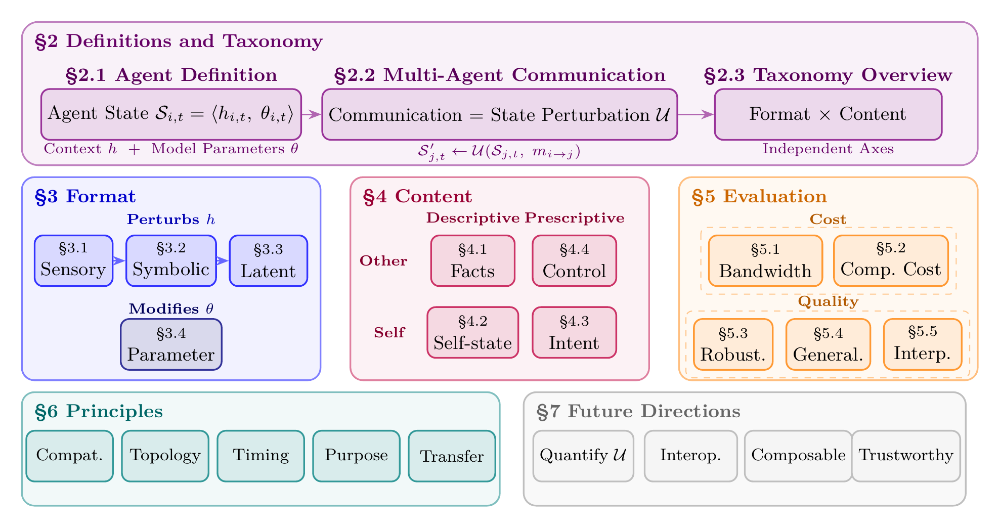
Survey Organization: Figure 1 maps the paper. §2 formalizes communication as a perturbation of the receiver’s state and reads off the Format \(\times\) Content taxonomy. §3 and §4 develop its two axes, Format across its Sensory, Symbolic, Latent, and Parameter levels and Content along its referent and function dimensions. §5 adds the Communication Pentagram, five channel-intrinsic evaluation dimensions that compare channels independently of any downstream task. §6 derives cross-paradigm design principles that follow from the Format-Content pair. §7 closes with open problems and future directions.
Paper Collection: A work enters this survey when it instantiates, refines, or stresses a Format \(\times\) Content cell or a Communication Pentagram concern, with coverage spanning foundational results through early-2026 preprints across the MARL, Emergent Language, and LLM-agent literatures; we forgo a single-keyword database sweep, since no shared vocabulary spans the three communities. We compile the resulting works, organized by their Format \(\times\) Content classification.
2 Definitions and Taxonomy
This section builds the Format \(\times\) Content taxonomy from first principles. We first formalize the agent state as a context-parameter tuple (§2.1), then model communication as a state-perturbation operator acting on that tuple (§2.2), from which the taxonomy follows directly (§2.3).
2.1 Agent Definition
We abstract the agent state as a context-parameter tuple \(\mathcal{S}_t=\langle h_t,\theta_t\rangle\) that separates non-parametric condition from learned weights:
Context \(h_t\): The non-parametric condition at \(t\), encompassing observation history, hidden activations, working memory, and any long-term stores the agent reads from or writes to.
Model Parameters \(\theta_t\): The agent’s learned weights, encoding decision-making capabilities. Parameters are updated only through deliberate training or Parameter-level communication.
Throughout, \(t\) indexes paradigm-dependent decision steps (environment step in MARL, generation pass in LLM-based systems, game round in EL). At each step, the agent acts according to its state, \(a_t \sim \pi(\cdot \mid \mathcal{S}_t) = \pi(\cdot \mid h_t, \theta_t)\). Agents differ in the provenance of \(\theta\):
Task-specific Models: \(\theta\) is initialized randomly and refined through environmental feedback.
Pre-trained Foundation Models: \(\theta\) is obtained from large-scale data, encoding world knowledge and reasoning.
2.2 Multi-Agent Communication
Consider \(N\) agents \(\mathcal{N}=\{1,\dots,N\}\), each instantiating the definition above. Communication is the transmission of a message \(m_{i \to j}\) (generated via a message policy \(m_{i \to j} \sim \pi_m(\cdot \mid \mathcal{S}_{i,t})\)) from sender \(i\) to receiver \(j\) (\(i \neq j\)), modeled as a state perturbation that abstracts the discrete-message belief update of communicative decentralized decision models (COM-MTDP (Pynadath & Tambe, 2002); Dec-POMDP-Com (Goldman & Zilberstein, 2004)) and extends it to continuous and Parameter-level channels. Because the receiver’s state is exhausted by the pair \(\langle h_t,\theta_t\rangle\) with no third component, any message that perturbs it must modify its context, its parameters, or both. Communication therefore updates the receiver’s state via two update operators, a context-level \(\mathcal{U}_h\) acting on \(h\) and a parameter-level \(\mathcal{U}_\theta\) acting on \(\theta\): \[\mathcal{U}_h(\mathcal{S}_{j,t}, m_{i \to j}) = \langle h'_{j,t}, \theta_{j,t}\rangle, \quad \mathcal{U}_\theta(\mathcal{S}_{j,t}, m_{i \to j}) = \langle h_{j,t}, \theta'_{j,t}\rangle.\] \(\mathcal{U}_h\) updates the receiver’s context, whereas \(\mathcal{U}_\theta\) updates its parameters. Reading only which component of \(\mathcal{S}\) a message writes, rather than the exact next state it produces, is what lets a single equation place otherwise incomparable mechanisms on the same footing: a MARL agent’s broadcast hidden vector, an LLM’s exchanged activations, and an EL agent’s emitted symbol are all instances of \(\mathcal{U}_h\) entering \(h\) at different depths.
2.3 Taxonomy Overview: Format \(\times\) Content
The operator equation invites two independent characterizations of message \(m\). Jointly, these two characterizations establish a Format \(\times\) Content matrix (Table 6).
Format (§3) is derived directly from the equation, specifying which state component \(m\) perturbs. The two operators already separate one Format from the rest. Messages routed through \(\mathcal{U}_\theta\) rewrite the receiver’s weights, giving a single Parameter format. Messages routed through \(\mathcal{U}_h\) are further distinguished by the depth at which they enter the context pipeline, which is assembled through three identifiable stages, raw observations at the sensor interface, discrete tokens at the parsing boundary, and continuous internal representations on which the policy operates. Entry at each stage yields, respectively, Sensory, Symbolic, and Latent format. Section 3 develops each format and the depth-versus-portability tradeoff it occupies.
Independently, Content (§4) captures the semantic information conveyed by \(m\), independent of how it is represented. Content spans two axes. The referent axis asks what the message is about: something external to the sender, such as the world or another agent, or the sender itself. The function axis asks what the message does: describe a state of affairs or prescribe an action. Their cross-product yields four content types: Facts, Self-state, Intent, and Control. Section 4 develops each type and the verification challenge it places on the receiver.
3 Communication Format
Format characterizes the representational substrate of \(m\), ranging from the raw signals of a Sensory channel, through the discrete tokens of a Symbolic one and the continuous vectors of a Latent one, to the weight updates of a Parameter one. These four levels form a spectrum of increasing architectural coupling: as the entry point moves deeper into the receiver, from external sensors, to the token-parsing boundary, to internal activations, to the weights themselves, the message preserves more of the sender’s internal state but demands progressively more shared structure between sender and receiver (compatible sensors, then a shared vocabulary, then aligned or bridged representation manifolds, then a compatible weight space). Each level below states where it sits on this depth-versus-portability tradeoff.
To make the four Formats concrete, consider two autonomous vehicles,
one of which must convey “obstacle detected ahead.” The same situation
can be communicated in any Format, with one natural realization each:
Sensory, the raw LiDAR point cloud; Symbolic, a
structured token {type: obstacle, distance: 42m, lane: 2};
Latent, an intermediate-layer feature map from the perception
backbone; and Parameter, a weight delta \(\Delta\theta\) after locally updating the
model on this encounter. Figure 2 gives the taxonomy at a glance;
per-format method comparisons and implementation tradeoffs appear in
Tables 1–4 within each subsection below.
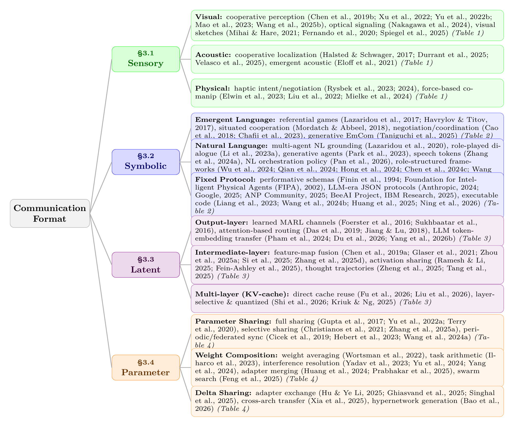
3.1 Sensory-level Communication
Sensory-level communication exchanges raw sensory data (pixel streams, 3D point clouds, acoustic waveforms, or contact forces), requiring only compatible sensors and no shared model structure. It operates through two pathways:
Passive relay: the sender forwards its local observation to extend the receiver’s effective sensing range, as in point-cloud forwarding for cooperative perception.
Active expression: the sender generates signals specifically to be perceived by others, as with LED beacons or acoustic alerts.
We classify sensory-level communication into three modalities: Visual, Acoustic, and Physical signals. Table 1 summarizes representative works.
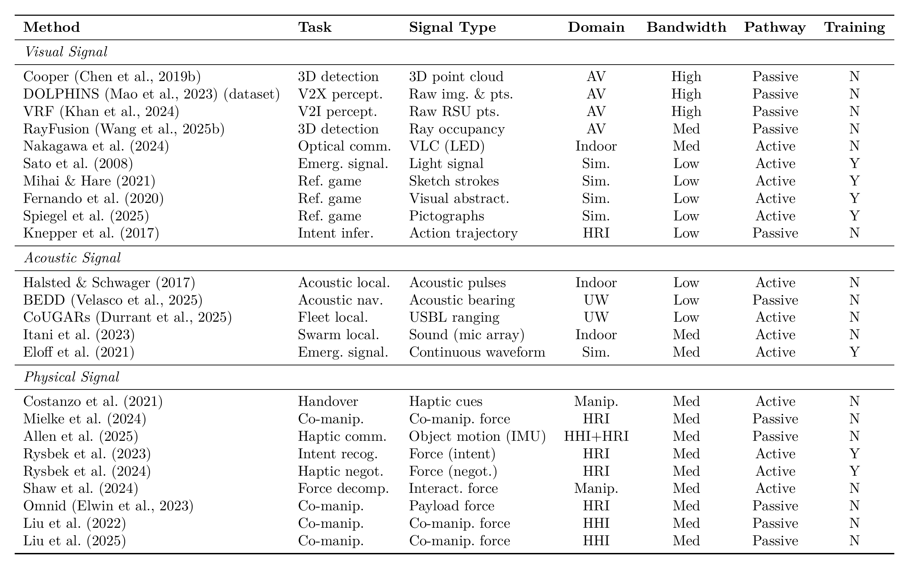
3.1.1 Visual Signal
Cooperative perception shares raw observations so that agents can see past the partial observability of any single viewpoint, tracing in autonomous driving a bandwidth-driven progression from heavy raw point clouds toward lighter representations, since visual data is denser than acoustic or physical signals and a single automotive LiDAR sweep can exceed 100 Mbps. Cooper shares raw 3D point clouds for vehicle-to-vehicle cooperative detection (Q. Chen, Tang, et al., 2019), a setting standardized by the OPV2V benchmark and fusion pipeline (R. Xu et al., 2022); DAIR-V2X and DOLPHINS extend it to vehicle-to-infrastructure and vehicle-to-everything with large-scale datasets (R. Mao et al., 2023; H. Yu et al., 2022), and VRF fuses vehicle and road-side point clouds (Khan et al., 2024). At the light end, RayFusion drops LiDAR for camera-only input but broadcasts learned instance features rather than raw point clouds, already crossing onto the Latent level that heavier channels also occupy (S. Wang et al., 2025). Optical signaling transmits through modulated light: visible-light communication can be decoded by an event camera, including event-based optical identification and communication from LED beacons (Arnim et al., 2024; Nakagawa et al., 2024), and a light-signaling protocol can itself be learned through reinforcement (Sato et al., 2008). Generative visual abstractions learn visual primitives from scratch through task reward in referential games, from emergent sketch strokes (Mihai & Hare, 2021) and drawing games (Fernando et al., 2020) to pictographs invented through visual theory of mind (Spiegel et al., 2025). These count as Sensory rather than Symbolic because the drawn primitives enter the receiver through its image pipeline rather than a symbol parser.
3.1.2 Acoustic Signal
Acoustic signals propagate around obstacles and through opaque media, making them indispensable in underwater and indoor settings where electromagnetic channels are unreliable. Cooperative localization recovers relative positions from sound: active acoustic pulses localize a robot team (Halsted & Schwager, 2017), while an underwater AUV team recovers relative position from passive acoustic bearings (Velasco et al., 2025) and the CoUGARs fleet from active ultra-short-baseline ranging (Durrant et al., 2025). Collaborative sensing turns the swarm itself into a distributed instrument: self-distributing acoustic swarms range one another with acoustic pulses, then separate and localize concurrent sources (Itani et al., 2023), and a multi-agent framework distributes auditory scene analysis across coordinating agents that pass acoustic feedback between tasks (Rascon et al., 2025). Agents can also learn an emergent acoustic protocol from scratch, speaking and hearing over a noisy continuous acoustic channel (Eloff et al., 2021).
3.1.3 Physical Signal
Physical signals transmit information through forces, torques, and contact, inherently bilateral, lower-bandwidth than dense visual streams yet lower-latency than a digital channel, enabling reactive coordination that digital channels struggle to match. Haptic communication reads and writes intent through contact: a partner’s intent can be recognized from force history (Rysbek et al., 2023) and turned into proactive negotiation of a shared plan (Rysbek et al., 2024), haptic cues coordinate object handover (Costanzo et al., 2021), and force and motion exchange supports human-robot co-manipulation (Allen et al., 2025; Mielke et al., 2024). Controlled human-dyad studies sharpen what the channel carries: haptic feedback improves coordination (Liu et al., 2022), and it is partner-sourced forces, rather than environmental ones, that drive the gains (Liu et al., 2025). At the multi-robot scale, the Omnid mocobots coordinate three-dimensional payload manipulation through mechanical forces in a shared object alone, with no wireless link, each robot reacting to payload forces through a local series-elastic controller (Elwin et al., 2023); interaction-force decomposition further resolves each agent’s force relative to the group’s net force (Shaw et al., 2024). Several of these are implicit communication, where the receiver infers intent from the sender’s task behavior rather than a dedicated signal: the force-history case above, and intent inferred from action and motion trajectories (Knepper et al., 2017; Tian et al., 2020).
3.2 Symbolic-level Communication
Symbolic-level communication exchanges symbolic tokens that map to meanings within a shared or emergent vocabulary, with no further structural alignment required. Its source distinguishes three families: Emergent Language (EL), learned through interaction; Natural Language (NL), inherited from pretraining; and Fixed Protocol Symbols, pre-specified at design time. What unites the three despite their different vocabulary sources is the symbolic bottleneck. A finite vocabulary \(\mathcal{V}\) and bounded message length \(L\) cap the channel at \(L\log_2|\mathcal{V}|\) bits, forcing the sender’s continuous internal state to be compressed into discrete tokens.
3.2.1 Emergent Language
Protocol construction proceeds from scratch through environmental feedback: referential and grounded cooperative games yield shared discrete vocabularies via joint optimization (Havrylov & Titov, 2017; Lazaridou et al., 2017; Mordatch & Abbeel, 2018), while agent-internal vector quantization further enables self-play in such games (Samiei Paqaleh et al., 2025); emergence presupposes mutual grounding (Clark & Brennan, 1991), and inductive biases toward positive signalling and listening shape whether agents use the channel at all (Eccles et al., 2019). Compositionality is promoted by capacity and bandwidth constraints that force efficient encoding (Kottur et al., 2017; Luna et al., 2020; Resnick et al., 2020), by generalization pressure (Mu & Goodman, 2021), teaching across fresh or successive learners (F. Li & Bowling, 2019; Ren et al., 2020), and structured input spaces (Lazaridou et al., 2018), though it is neither automatic nor strictly necessary for generalization (Chaabouni et al., 2020). Generalization limits persist: emergent protocols often exhibit anti-efficient encoding (Chaabouni et al., 2019) and struggle with systematic generalization, echoing the compositional-generalization limits documented for sequence models (Lake & Baroni, 2018), though population voting and imitation learning partially mitigate the gap (Chaabouni et al., 2022). Beyond these core dynamics, EL has been applied to bidirectional cooperation (Wolff et al., 2024), negotiation (Cao et al., 2018), and wireless coordination (Chafii et al., 2023), with standard tooling provided by EGG (Kharitonov et al., 2019) and a bridge to LLM-based communication via collective predictive coding (Taniguchi et al., 2025).
3.2.2 Natural Language
NL uses a vocabulary inherited from large-scale pretraining, bypassing the protocol-acquisition phase that defines EL; tokens inherit a human-interpretable vocabulary from pretraining, though task adaptation can induce drift (Lazaridou et al., 2020). Across LLM-based systems, the role NL plays widens from the message payload agents exchange, to the workflow structure that organizes it, to the orchestration policy that governs the run itself. Message payload is NL’s basic role, carrying the content agents exchange: CAMEL structures multi-turn exchanges via inception prompting (G. Li et al., 2023), Generative Agents couple it with memory and reflection (Park et al., 2023), SpeechAgents extends it to spoken interaction through discrete speech tokens (D. Zhang et al., 2024), and EC-Drive reduces uplink bandwidth via drift-detection-based selective transmission of critical observations to a cloud LLM (Chen, Dai, et al., 2024). Workflow structure organizes that payload into role pipelines and shared artifacts: AutoGen makes inter-agent dialogue a first-class programming abstraction (Wu et al., 2024), ChatDev pairs role-played agents in a software-development chat chain (Qian et al., 2024), MetaGPT routes structured documents and code through a shared message pool (Hong et al., 2024), AgentVerse offers both democratic group discussion and solver–reviewer refinement (W. Chen et al., 2024), and Mixture-of-Agents layers agents so each reads all prior-layer responses before an aggregator synthesizes them (J. Wang et al., 2025). Orchestration policy is the furthest step, where NL governs the run itself rather than only its messages: Natural-Language Agent Harnesses represent that policy as runtime-interpreted editable documents (Pan et al., 2026).
3.2.3 Fixed Protocol Symbols
Fixed protocols use rigid, pre-defined vocabularies whose specification is fully determined before deployment, giving the receiver deterministic parsing. Declarative schemas decompose messages into typed fields and performatives. Classical KQML (Finin et al., 1994) and FIPA-ACL (Foundation for Intelligent Physical Agents (FIPA), 2002), which standardized fixed performative vocabularies for cross-system interoperability at the cost of expressiveness, have been succeeded by LLM-era protocols MCP (Anthropic, 2024), ANP (ANP Community, 2025), ACP (BeeAI Project, IBM Research, 2025), and A2A (Linux Foundation, 2025) that standardize agent and tool interoperability through declarative JSON or API-style message schemas for discovery, message envelopes, and task lifecycles (Y. Yang et al., 2025). Imperative code uses programming-language syntax as the vocabulary, with Code-as-Policies (Liang et al., 2023) and CodeAct (X. Wang et al., 2024) treating executable Python as the action substrate, and compositional coordination (Z. Huang et al., 2025) extending this to multi-robot teams via hierarchical programs. Executable code gains expressiveness beyond fixed schemas at the cost of sandbox execution and a higher trust requirement, since the receiver must run the sender’s code. Recent work further positions shared code artifacts as the operational substrate for multi-agent coordination, review, and execution-based verification (Ning et al., 2026).
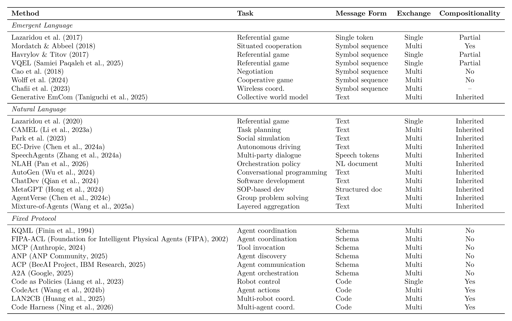
3.3 Latent-level Communication
Latent-level communication transmits continuous vector representations interfacing directly with the receiver’s computational layers, requiring either pre-existing manifold alignment (as when sender and receiver share a base model) or a learned module that bridges otherwise unaligned manifolds. The injection layer organizes methods into three strata: output-layer embeddings, intermediate-layer activations, and multi-layer representations. These strata trade off along a single axis of injection depth. Shallow output-layer injection, entering at the boundary between perception and policy, ports easily across heterogeneous architectures but discards most of the receiver’s internal structure, whereas deep multi-layer injection preserves nearly the full computational state but binds tightly to a shared architecture.
3.3.1 Output-layer Embeddings
MARL established the core latent patterns at this shallowest stratum. Channel construction began with DIAL’s dedicated learned bottleneck (Foerster et al., 2016), CommNet’s aggregated hidden states (Sukhbaatar et al., 2016), and BiCNet’s bidirectional recurrent hidden-state sharing (Peng et al., 2017), then added selectivity, with ATOC gating when and with whom to communicate (Jiang & Lu, 2018) and TarMAC using signature-based attention to target whom to address (Das et al., 2019), followed by bandwidth-limited compression, scheduling, and message pruning in IMAC, SchedNet, and Gated-ACML (D. Kim et al., 2019; H. Mao et al., 2020; R. Wang et al., 2020), and dynamic graph topologies over who communicates in MAGIC and FlowComm (Du et al., 2021; Niu et al., 2021). LLM analogues carry this pattern to language models: CIPHER transmits token-embedding expectations as the message (Pham et al., 2024), while InterLat sends compressed latent sequences between heterogeneous models (Z. Du et al., 2026). RecursiveMAS extends output-layer exchange to recursive collaboration, where a lightweight connector transfers latent states across iterative refinement rounds between heterogeneous agents (X. Yang et al., 2026). Additional output-layer methods are catalogued in Table 3.
3.3.2 Intermediate-layer Activations
Cooperative perception shares spatial features under bandwidth constraints: F-Cooper exchanges spatial feature maps for autonomous-vehicle edge perception (Q. Chen, Ma, et al., 2019), MASH adds 2D spatial handshaking to select which regions to exchange (Glaser et al., 2021), and When2com (Y.-C. Liu, Tian, Glaser, et al., 2020) adds learned communication-graph grouping while Who2com (Y.-C. Liu, Tian, Ma, et al., 2020) adds learnable handshake selection over which peers exchange those features. Activation sharing in LLM agents injects hidden states rather than feature maps: Communicating Activations explores functional forms for combining hidden states at an intermediate layer (Ramesh & Li, 2025), Thought Communication disentangles and shares identifiable latent thoughts extracted from agent hidden states (Zheng et al., 2025), and State-Delta Encoding transmits token-wise state deltas to capture reasoning dynamics (Tang et al., 2025). Heterogeneous feature alignment bridges unaligned manifolds: PHCP aligns features across heterogeneous perception models through self-training adapters (Si et al., 2025), GenComm aligns them for pragmatic collaborative perception through a generative mechanism (J. Zhou et al., 2025), MASTAVN fuses acoustic and visual features through a shared decoder for multi-agent audio-visual navigation (Zhang et al., 2025), and Mixture-of-Thoughts learns to aggregate latent representations across heterogeneous experts (Fein-Ashley et al., 2025).
3.3.3 Multi-layer Representations
The deepest stratum injects representations across many layers at once. In current systems this takes the form of KV-cache sharing, where the receiver ingests per-layer key-value tensors rather than a single vector, and methods span two axes. Alignment ranges from training-free per-layer cache prepending in LatentMAS (Zou et al., 2026) and partial reuse with selective recomputation in DroidSpeak (Liu et al., 2026) through gated cache fusion in Cache-to-Cache (T. Fu et al., 2026) to learned K-V adapters (Dery et al., 2026) and shared prefill modules (Woo et al., 2026). Bandwidth reduction cuts the transmitted cache through layer-wise selection in KVComm (Shi et al., 2026), adaptive cache quantization in Q-KVComm (Kriuk & Ng, 2025), or base–adapter decomposition for multi-LoRA agents in LRAgent (Jeon et al., 2026). A further concern is deployment across diverging contexts, where online cross-context synchronization keeps shared caches consistent as agents’ prefixes drift (Ye et al., 2025).
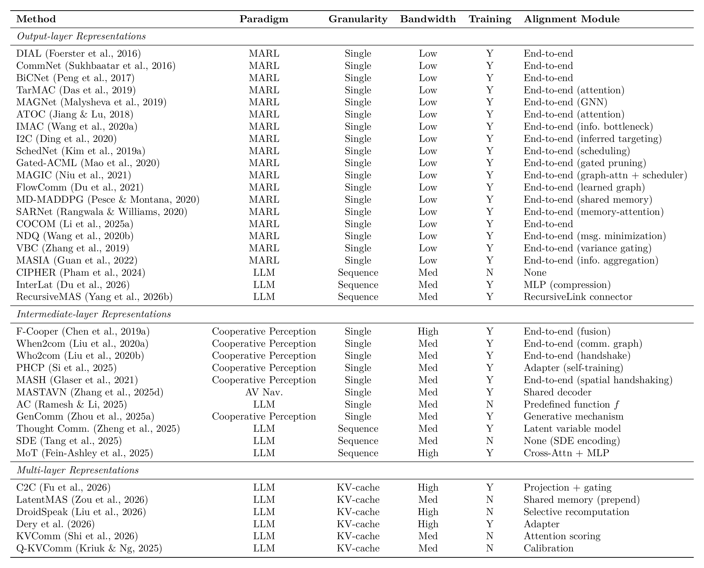
3.4 Parameter-level Communication
Parameter-level communication transmits model weights or weight-derived artifacts that install directly into the receiver’s model, modifying its behavior \(f(\cdot, \theta)\) rather than its input, requiring a compatible weight space between sender and receiver. These mechanisms divide by how the artifact enters \(\theta\). In parameter sharing, coupling is implicit and continuous; a shared weight vector serves as a common substrate rather than a sender-emitted message, with each gradient update propagating one agent’s experience to the others. We retain it as the limiting case of the Parameter format, where training-side coupling substitutes for an explicit message. In weight composition, independently trained models are combined symmetrically post hoc; this is the offline limiting case of parameter exchange, applicable when the contributing weights originate from distinct agents, rather than runtime sender–receiver injection. In delta sharing, communication is an atomic per-event weight injection by an external sender, where the receiver integrates \(\Delta\theta\) into \(\theta\) by assignment without a loss-driven gradient step. Events may recur at varying cadences (Timing column of Table 4); for delta sharing each occurrence is itself atomic.
3.4.1 Parameter Sharing
Parameter sharing couples agents through a common weight vector and varies in how tightly that coupling binds them. Full sharing ties every agent to an identical \(\theta\) (Gupta et al., 2017; Terry et al., 2020; C. Yu et al., 2022), whereas selective sharing preserves behavioral diversity by restricting coupling to agent subgroups or to parameter subsets: Kaleidoscope learns per-agent masks over a shared backbone (X. Li et al., 2024) and LoRASA confines agent-specific divergence to low-rank adapters (B. Zhang et al., 2025), alongside subgroup-restricted sharing (Christianos et al., 2021). Periodic synchronization loosens coupling in time, updating a shared policy only at long intervals so that agents diverge between rounds (Cicek et al., 2019). At the distributed scale, federated aggregation merges agent updates through a central server, from the canonical FedAvg protocol (McMahan et al., 2017) to the attention-based contextual federation of FedFormer (Hebert et al., 2023) and momentum-aware collaborative variants (H. Wang et al., 2024; Y. Zhang et al., 2024), while Swarm Learning replaces the server with peer-to-peer synchronization (Warnat-Herresthal et al., 2021) and distributed continual learning shares modular parameter subsets directly among agents (Le et al., 2024). Additional parameter-sharing variants are catalogued in Table 4.
3.4.2 Weight Composition
Weight composition algebraically combines independently trained models post hoc. Model Soups simply averages full fine-tuned weights (Wortsman et al., 2022), and Task Arithmetic instead transmits each model’s task vector \(\tau = \theta_{\text{ft}} - \theta_{\text{pre}}\) (Ilharco et al., 2023). The central challenge is parameter interference, where independently trained updates conflict when summed: TIES-Merging resolves it by trimming and electing signs before merging (Yadav et al., 2023), DARE by randomly dropping and rescaling delta entries (L. Yu et al., 2024), adaptive schemes by learning layer-wise or finer-grained scaling coefficients (Gauthier-Caron et al., 2024; E. Yang et al., 2024), and OrthoMerge by composing updates while preserving their geometry (S. Yang et al., 2026). Exploring the design space at larger scale, evolutionary recipe search optimizes merging configurations (Akiba et al., 2025), Model Swarms drives a collaborative swarm search over experts (Feng et al., 2025), and scaling analyses chart how merging behaves as model count grows (Yadav et al., 2024). At the adapter level, LoraHub composes LoRA modules for cross-task generalization (C. Huang et al., 2024), as do LoRA Soups (Prabhakar et al., 2025).
3.4.3 Delta Sharing
Delta sharing installs a lightweight artifact (\(\Delta\theta\), orders of magnitude smaller than \(\theta\)) into the receiver, achieving the lowest parameter-level bandwidth at the cost of base-model compatibility. In peer transfer, agents distill expert knowledge into adapters and distribute them across the network (J. Hu & Li, 2025). Fed-SB aggregates LoRA-based low-rank updates across agents through a central server (Singhal et al., 2025), while a decentralized variant does so via peer-to-peer synchronization (Ghiasvand et al., 2025), and CrossLoRA enables cross-architecture transfer by aligning adapter subspaces across heterogeneous models through SVD truncation (Xia et al., 2025). In conditional generation, hypernetwork architectures generate agent-specific parameters on demand rather than transmitting them wholesale: the genuinely inter-agent case generates a receiver-targeted LoRA perturbation directly from the sender’s hidden state, bypassing token-level exchange (Bao et al., 2026). In centralized-training MARL, by contrast, each agent’s weights are produced from a shared identity, task, or teammate embedding (Guan et al., 2024; Tessera et al., 2025; Yao et al., 2025); these are structural analogues rather than inter-agent transmitted messages, at the boundary of delta sharing.
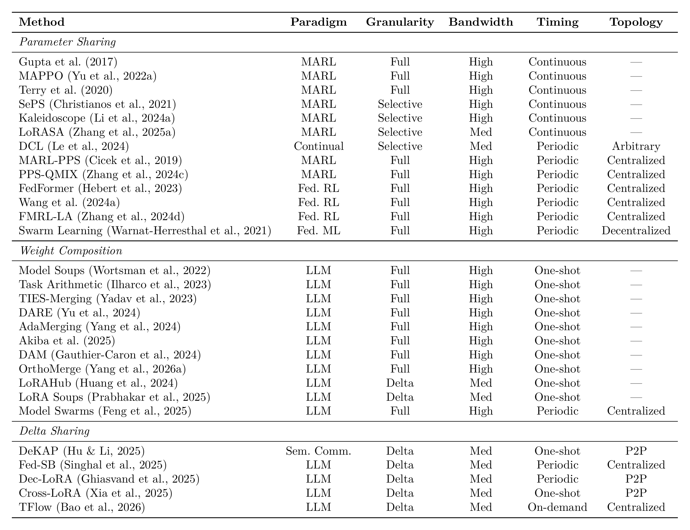
4 Communication Content
Content characterizes the semantic payload of \(m\), independent of how it is represented. The four categories (§2.3) arise from two independent binary axes. The referent axis asks what the message is about: something external to the sender (the world or another agent) versus the sender itself. The function axis asks what the message does: describe a state (descriptive) or prescribe an action (prescriptive). This split builds on Austin’s distinction between locutionary content and illocutionary force (Austin, 1975) and maps the coordination-relevant classes of Searle’s illocutionary acts (Searle, 1976) onto those two functions. Their cross-product yields exactly four cells: Facts (descriptive, external entities), Self-state (descriptive, the sender’s own condition, including its beliefs and epistemic states about external entities), Intent (prescriptive, binding the sender’s own future action), and Control (prescriptive, directing the receiver). Intent and Control are thus distinct despite both being prescriptive. Of Searle’s five illocutionary classes, the remaining two, expressives and declarations, carry no coordination payload and fall outside this taxonomy. These types appear as explicit, labeled primitives in standardized agent protocols (e.g., FIPA-ACL, A2A) but are often left implicit in free-form LLM frameworks, MARL, and Emergent Language; whether a content type can be realized as such is a structural question the subsections address.
To make the four types concrete, consider a team of LLM agents on a research task. One agent can transmit a Fact (“Smith et al. (2023) reports 94% accuracy on this benchmark”), a Self-state (“I have web access but no code-execution capability”), an Intent (“I will retrieve the full paper and extract its methodology”), or a Control directive (“compile all retrieved sources into a bibliography”).
Each imposes a different obligation on the receiver, a verification challenge descending from the success conditions of the underlying speech act, and these challenges organize the subsections. An assertive succeeds when its proposition matches the referent: a Fact therefore raises veracity, reconciling conflicting reports toward a ground truth, and provenance, tracking lineage so that reliance can be re-evaluated when a source’s reliability later changes. A Self-state disclosure is an assertive about the sender with no external ground truth, so its challenges are trust-dependent: disclosure scope (what to reveal and at what granularity), trust regimes (how safe exposure scales with trust in peers), and behavioral inference (recovering the sender’s state from behavior when disclosure cannot be trusted). A commissive Intent succeeds when the sender is sincere and able to follow through, raising commitment credibility and, when declared plans conflict, negotiation. A directive Control succeeds when the receiver complies, raising authority recognition and compliance. Figure 3 shows the taxonomy and Table 5 maps standardized protocol performatives onto the four types; the formal derivation of the two axes is in Appendix B.2.
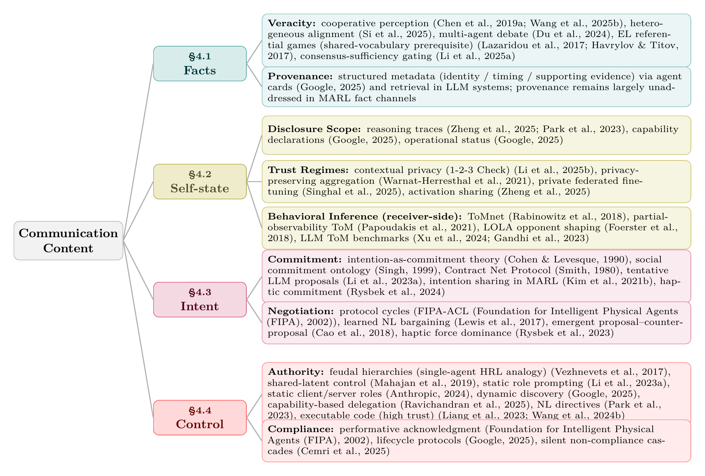
4.1 Facts
Factual communication transmits descriptive information about external state (the world or another agent), expanding the receiver’s observability and admitting accuracy evaluation against ground truth. Because Facts concern a shared external referent, they can be carried by any of the four Formats (Sensory through Parameter) and aggregated across senders, making them the central content type in cooperative perception, distributed sensing, and consensus protocols (Olfati-Saber et al., 2007). Beyond aggregation, what is distinctive to Facts is the receiver’s two added obligations: establishing the veracity of conflicting reports of the same entity, and tracking the provenance that lets a decision be re-evaluated when a source’s reliability later changes. We take these in turn.
4.1.1 Veracity
When agents report contradictory observations of the same entity, reconciliation recovers a pre-existing, agent-independent ground truth. The mechanisms below all serve this recovery, varying by format level. Sensory and Latent levels estimate it through format-specific fusion pipelines, from early raw-signal fusion through intermediate feature fusion (Q. Chen, Ma, et al., 2019) to late detection voting, with heterogeneous agents aligning their feature spaces before Latent-level fusion (Si et al., 2025). At the Symbolic level, EL agents must first converge a shared vocabulary through referential games (Havrylov & Titov, 2017; Lazaridou et al., 2017), a prerequisite for any symbolic exchange rather than an estimator in itself. Estimation over those shared propositions is then carried out classically by truth discovery, which infers per-source reliability and weights reports accordingly to recover the most likely true value (Yin et al., 2008). This inherits the belief revision problem of rationally folding new reports into a maintained belief set (Alchourrón et al., 1985).
Its LLM instances keep this truth-seeking structure: confidence-weighted round-table consensus reweights peers by their self-reported confidence (Chen, Saha, et al., 2024), multi-agent debate, when aimed at factual accuracy, has agents critique and revise one another’s factual claims across rounds to converge on better-supported answers (Du et al., 2024), and cross-examination has one model interrogate another across turns to surface the inconsistencies that betray a false claim (R. Cohen et al., 2023). Consensus-gated transmission complements these by suppressing redundant reports, sending only when a learned gate predicts the message adds decision-relevant information beyond the shared consensus (D. Li et al., 2025).
Because the estimate is only as reliable as its sources, robustness against malicious or unreliable reporters is layered on top. Byzantine-resilient aggregation such as Krum replaces naive averaging with the vector minimizing the summed distance to its nearest neighbors, discarding adversarial outliers (Blanchard et al., 2017), rooted in Byzantine fault tolerance (Lamport et al., 1982). Adversarial-consensus mechanisms such as ROBOSAC resample random subsets of collaborators until the fused result agrees with the ego agent’s own perception, isolating an attacker-free subset without knowing the attack (Li et al., 2023).
4.1.2 Provenance
Beyond establishing veracity at aggregation time, Facts impose a longitudinal lineage obligation. Provenance is a matter of source attribution, spanning from its complete absence to a full lineage. At one end, naked facts carry no source information, as in early MARL channels that broadcast opaque message vectors such as DIAL’s learned message vector (Foerster et al., 2016) and CommNet’s averaged hidden states (Sukhbaatar et al., 2016), neither of which carries a source tag. At the other, provenance-tagged facts attach a true lineage of identity, timing, and supporting evidence, as when agent cards expose sender identity (Linux Foundation, 2025) or retrieval-augmented generation grounds a claim in retrieved passages that can be inspected as its support (P. Lewis et al., 2020). A per-detection confidence score, as in RayFusion, where a sender broadcasts only its top-confidence instance detections (S. Wang et al., 2025), is easily mistaken for a midpoint on this axis but lies off it: it signals report quality, not source identity. MARL channels at most expose such a confidence signal, still short of the source attribution that lineage requires, whereas LLM systems have developed richer provenance primitives; introducing provenance to MARL fact channels would harden cooperative perception against unreliable sources.
4.2 Self-state
Self-state communication transmits descriptive information about the sender, including beliefs, capabilities, and reasoning processes, making the sender legible to peers. Because its referent is the sender’s own internal condition, Self-state has no external ground truth: receivers cannot cross-validate a self-report the way they can for Facts, making its value inherently trust-dependent and disclosure a strategic decision. The same content shifts cell with its referent: “the obstacle is 5 m away” is a Fact about the world, but “I believe the obstacle is 5 m away” is Self-state, judged by trust in the sender rather than against the world directly. Beyond trust, Self-state raises a disclosure problem with two sides: what the sender reveals, governed by disclosure scope and the trust regimes that scale exposure to how far peers can be trusted, and what the receiver can recover when disclosure is absent or untrusted, through behavioral inference. We take these in turn.
4.2.1 Disclosure Scope
Disclosed content spans four facets. Epistemic state (beliefs, confidence, uncertainty) stays implicit in an agent’s hidden activations in MARL, whereas LLM agents increasingly verbalize it as confidence (Lin et al., 2022) or structured uncertainty schemas, though the reliability of self-reported confidence remains open (Xiong et al., 2024): verbalized confidence is systematically overconfident, and no elicitation method calibrates reliably on harder tasks. Reasoning is not externalized in MARL, where policy computation leaves no inspectable trace, whereas LLM agents disclose it as natural-language reflection traces, as in Generative Agents, whose reflection component periodically synthesizes an agent’s accumulated memories into higher-level natural-language inferences that are retrieved to guide later planning (Park et al., 2023), or as latent thoughts (Zheng et al., 2025), which aids debate-based coordination, though disclosing reasoning at this depth also widens what an untrusted peer could exploit. Capabilities (tool access, knowledge domains) are formalized by structured schemas such as A2A agent cards (Linux Foundation, 2025) and MCP tool schemas (Anthropic, 2024). MARL has no comparable disclosure primitive; agent heterogeneity is instead absorbed internally rather than declared through a capability schema, for instance by conditioning policies on a type inferred from local history (S. Fu et al., 2025). Operational status (progress, resource availability) has no dedicated disclosure primitive in MARL, where it stays implicit in the shared observations or state that agents already exchange; it becomes explicit only in protocols, tracked through the task lifecycle in standards such as A2A (Linux Foundation, 2025).
4.2.2 Trust Regimes
Greater transparency improves coordination but carries exploitation risks that scale with how little the sender can trust its peers, giving three regimes. Under full trust (cooperative MARL, trusted agent teams) unrestricted disclosure is appropriate, since the sender has no incentive to misreport. Under partial trust, for example LLM agents from different providers in one workflow, full disclosure becomes weaponizable, motivating contextual-privacy mechanisms that withhold private information while still sharing task-relevant content, as in 1-2-3 Check, whose staged extractor and dedicated checker agent classify each item as private or public before a downstream summary is produced (W. Li et al., 2025). Under adversarial trust, in open ecosystems, any disclosure can be exploited. Sharing model parameters \(\theta\) leaks training-data distributions, since shared updates can be inverted to reconstruct private training examples (L. Zhu et al., 2019) or, even with query-only access, to expose training-set membership (Shokri et al., 2017). This motivates privacy-preserving aggregation (Warnat-Herresthal et al., 2021) and private federated fine-tuning, as in Fed-SB, which shares only a tiny square matrix between frozen low-rank adapters, so its small parameter count lowers the differential-privacy noise needed to mask each client’s data (Singhal et al., 2025). Sharing activations, as in thought communication (Zheng et al., 2025), likewise exposes reasoning processes that, by the same trust-regime logic, become exploitable once peers cannot be fully trusted. The response is asymmetric disclosure, withholding self-information selectively by context, rather than uniform transparency.
4.2.3 Behavioral Inference
Because Self-state has no external ground truth, a receiver that cannot rely on honest disclosure can instead infer the sender’s state from behavior. In MARL this takes the form of agent and opponent modeling, a long-standing line in which an agent builds predictive models of others’ actions, goals, and beliefs (Albrecht & Stone, 2018). ToMnet predicts an agent’s mental state from observed trajectories (Rabinowitz et al., 2018). Partial-observability variants such as LIAM train an encoder-decoder to reconstruct other agents’ observations and actions from the controlled agent’s local observation history alone, so the learned representations are usable at execution without access to others’ information (Papoudakis et al., 2021). Opponent-shaping methods such as LOLA account for how others update in response to one’s own actions (Foerster et al., 2018). For LLM agents the analogous capacity is probed by theory-of-mind benchmarks: OpenToM tests whether models track characters’ mental states across physical- and psychological-world questions (H. Xu et al., 2024), while BigToM procedurally generates social-reasoning evaluations by populating causal templates with an LLM (Gandhi et al., 2023). Because the sender emits no self-report here, inference is receiver-side modeling rather than a transmitted message; it is complementary to disclosure, substituting precisely in the partial- and adversarial-trust regimes where self-reports cannot be trusted.
4.3 Intent
Intent communication declares the sender’s planned future actions, enabling proactive coordination (W. Kim et al., 2021). These declarations are Searle’s commissive acts (Searle, 1976), binding the sender’s own future behavior rather than directing the receiver, and are inherently episodic. Intent therefore raises a two-part challenge: calibrating commitment credibility, the receiver’s confidence that a declared plan will be carried out, and negotiation when two senders declare incompatible plans that neither can impose on the other. We take these in turn.
4.3.1 Commitment
Commitment ranges from tentative proposals to binding guarantees, a range grounded in three lines of formal work. Bratman’s planning theory treats intentions as commitments embedded in larger plans, distinct from beliefs and desires (Bratman, 1987), later operationalized as a running-agent architecture in the BDI model (Rao & Georgeff, 1991); Cohen and Levesque formalize intention as choice with commitment (P. R. Cohen & Levesque, 1990); and Singh models directed social commitments as a relation between a debtor and a creditor agent rather than a private state, situated within spheres of commitment that scope their applicability (M. P. Singh, 1999). On the receiver side, generalized plan recognition (Kautz & Allen, 1986) infers plans from observed actions, complementing explicit declarations. Modern LLM-agent frameworks typically reduce intent to free-form natural-language proposals without explicit commitment levels: CAMEL coordinates a role-played AI user and assistant purely through inception-prompted natural-language exchanges (G. Li et al., 2023), and AutoGen makes inter-agent dialogue a first-class programming abstraction (Wu et al., 2024), neither marking how firmly a declared plan is held. Exposing commitment level as an explicit protocol variable, partially modeled by the Contract Net Protocol in which peers bid on announced tasks and the winner commits to delivery (Smith, 1980), would let receivers calibrate trust in declared intent. Strength is only one axis of commitment; its temporal scope is another, and here too current frameworks fall short: a commissive act is episodic, lapsing once its action is executed or superseded, with no mechanism to persist it across episodes, so an agreed plan must be re-declared rather than carried forward.
4.3.2 Negotiation
When agents declare incompatible plans, neither sender holds authority over the other’s commitment, so resolution is fundamentally symmetric. The conflict must be negotiated to a mutually acceptable plan rather than resolved by one side overriding the other. This contrasts with Control (§4.4), where a recognized authority relation makes non-compliance an asymmetric failure the directing agent can, in principle, detect and escalate. Three mechanisms span the negotiation case. Protocol-based negotiation uses FIPA-ACL speech-act cycles (Foundation for Intelligent Physical Agents (FIPA), 2002). Learned natural-language negotiation trains agents end-to-end to bargain in free-form dialogue, as in the deal-or-no-deal setting where self-play yields strategic NL offers and counter-offers (M. Lewis et al., 2017), and scales to rich multi-party strategic settings where Cicero couples a language model with strategic planning to negotiate human-level free-form dialogue in Diplomacy (Meta Fundamental AI Research Diplomacy Team (FAIR) et al., 2022). Emergent negotiation lets agents develop signalling within a proposal/counter-proposal bargaining game from scratch (Cao et al., 2018). Intent is also conveyed non-symbolically. In physical human-robot collaboration a robot modulates its commitment to a goal through discrete control states (Rysbek et al., 2024), and incompatible plans are resolved through back-and-forth interaction forces by which partners negotiate roles and reach consensus (Rysbek et al., 2023), the Sensory-format realization of the commitment and negotiation primitives above. MARL has explored intention sharing (W. Kim et al., 2021) but lacks a dedicated intent type with commissive semantics, leaving trajectory-prediction and intent-conditioned planning disconnected from the commitment structure established here; formalizing an explicit intent primitive in MARL remains an open bridge between learned multi-agent coordination and formal commitment theory.
4.4 Control
Control communication transmits directives that prescribe or constrain the receiver’s behavior, corresponding to Searle’s directive acts (Searle, 1976). Unlike Intent, which binds the sender, Control targets the receiver and typically invokes a recognized authority relation. For a directive to take effect, the receiver must recognize its prescriptive force and act on it, not merely register its content as it would a description. Information requests are a common special case in which the prescribed action is itself a communicative act, since a query directs the receiver to return a descriptive report, so interrogatives fall under Control rather than forming a fifth content type. Control then presents a two-part challenge: establishing the authority relation that gives a directive its force, and closing the compliance loop, since without a feedback mechanism a directive is fire-and-forget. We take these in turn.
4.4.2 Compliance
Without a closed feedback loop, Control is fire-and-forget. The
sender cannot tell whether a directive succeeded, failed, or was even
received. Classical protocols formalize compliance via typed
performatives. FIPA-ACL (Foundation for Intelligent Physical Agents (FIPA),
2002) distinguishes agree (the receiver commits
to attempt), refuse (it rejects), and failure
(it attempted and failed), reporting success through an
inform rather than a dedicated performative. A
performative’s content type follows the referent of its proposition
rather than the performative itself: an inform is a Fact
about the world but a Self-state when it reports the sender’s own
outcome. Under this rule failure (and success via
inform) is a Self-state report of the receiver’s own
execution outcome, whereas agree is a commissive Intent and
refuse a Self-state report of non-acceptance, so a Control
directive’s loop is closed by a message of a different content type
(Table 5). Modern protocols embed the same primitives in task
lifecycles, exposing each transition as an observable event (A2A:
submitted \(\to\) working \(\to\) completed/failed (Linux
Foundation, 2025)). Most LLM multi-agent systems instead
leave compliance implicit, inferring it from the receiver’s next
message, which works for trusted teams but fails in open systems where
untrusted receivers may falsely report success or silently drop
directives. Agents that fabricate shortcut solutions misrepresenting
task completion (F. F. Xu et al., 2025) exemplify the
no-verification and information-withholding failure modes the empirical
MAST taxonomy isolates across multi-agent LLM frameworks (Cemri
et al., 2025).
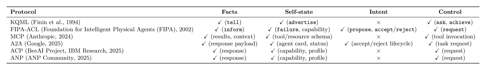
accept/reject
abbreviate
accept-proposal/reject-proposal.5 Communication Evaluation
Prevailing task-centric metrics such as cooperative reward (Foerster et al., 2016; Lowe et al., 2017; Sukhbaatar et al., 2016), detection mAP (S. Wang et al., 2025), and task-completion benchmarks conflate communication’s contribution with that of agent policies and training data, leaving protocols incommensurable across paradigms. The Communication Pentagram evaluates communication along five intrinsic, task-independent dimensions: Bandwidth, Computational Cost, Robustness, Generalization, and Interpretability. These split into two families: the cost dimensions Bandwidth and Computational Cost, implementation-dependent with overlapping cross-format ranges, and the quality dimensions Robustness, Generalization, and Interpretability, some of whose values are structurally fixed by the architectural depth at which the update operator \(\mathcal{U}\) of §2 acts.
The Pentagram’s contribution is a shift in evaluation target, from the downstream task to the channel itself. Where Format and Content follow from the operator equation, these five axes instead consolidate the cost and quality concerns recurring across paradigms, a positioning developed in Appendix B.3. Each axis is a canonical operationalization of an established measure chosen for cross-paradigm comparability: rate-distortion and mutual information for Bandwidth (Cover & Thomas, 2006), the FLOP ratio for Computational Cost, normalized performance gap for Robustness and Generalization, and recoverable-depth analysis for Interpretability. A Pentagram profile therefore augments paradigm-specific evaluations rather than replacing them. Per-axis formulas, perturbations, and OOD splits are in Appendix D.
5.1 Bandwidth
Bandwidth measures the data volume required to transmit a message: per-message \(B(m) = |m|_{\text{bits}}\), with aggregate \(B_{\text{agg}} = \sum_{(i,j)} B(m_{i \to j})\) scaling linearly or quadratically with \(N\) depending on topology. Formats report in different units, which bit-normalization must reconcile for any cross-paradigm comparison: latent vectors scale as dimension \(\times\) precision, Symbolic messages as tokens \(\times\) \(\log_2|\mathcal{V}|\), and KV-caches as a per-layer, per-head product, while raw Sensory signals arrive already bit-denominated with volume set by resolution. Appendix D.2 gives the per-format conversion. Even normalized, equal bit counts can carry different semantic loads. For Parameter-level transfer, where a single update transmits \(|\Delta\theta|\) bits but serves \(K\) subsequent decisions, the relevant figure is the amortized per-decision cost \(|\Delta\theta|/K\), which can fall below the per-decision bandwidth of any context-level format when \(K\) is large.
5.2 Computational Cost
Computational cost is the marginal processing burden over the non-communicative baseline, \(C_{\text{comm}} = (F_{\text{encode}} + F_{\text{decode}})/F_{\text{base}}\). Sender-side cost ranges from negligible MARL encoding heads (Foerster et al., 2016) to autoregressive LLM token decoding, which latent methods (Pham et al., 2024; Zheng et al., 2025) bypass by transmitting continuous embeddings or activations rather than sampled tokens, though the sender’s autoregressive forward passes generally remain. Receiver-side cost scales with peer count: \(O(N^2)\) for all-to-all communication, reduced toward \(O(N)\) by learned scheduling (D. Kim et al., 2019) that gates which peers communicate; relevance-weighted attention (Das et al., 2019) instead reweights the all-to-all aggregation without lowering its asymptotic order. In LLM multi-agent systems the same \(O(N^2) \to O(N)\) saving comes from sparsifying the inter-agent communication graph. Pruning redundant or adversarial message edges (G. Zhang, Yue, Li, et al., 2025) or imposing a sparse debate topology (Li et al., 2024) cuts inter-agent token cost substantially while preserving task accuracy, and training the protocol itself against a joint performance, cost, and readability objective compounds the saving (W. Chen, Yuan, et al., 2025). Receiver cost additionally grows with dialogue length as the context window accumulates, a temporal axis orthogonal to peer count that summarization and selective-retention strategies are designed to bound. KV-cache reuse trades bandwidth for greatly reduced receiver prefill, whether by replacing it with a learned fusion step (T. Fu et al., 2026) or by selectively recomputing only some layers (Liu et al., 2026). Parameter-level transfer, by contrast, incurs a one-shot installation cost that, like its bandwidth, amortizes over the \(K\) decisions it serves, leaving at most a recurring per-decision surcharge such as an adapter’s forward pass.
5.3 Robustness
Robustness measures degradation under non-ideal conditions, \(\Delta = \text{perf}(\mathcal{U}(\mathcal{S}_j, m)) - \text{perf}(\mathcal{U}(\mathcal{S}_j, \phi(m)))\) for perturbation \(\phi\) in the operator notation of §2, where \(\text{perf}(\cdot)\) is downstream task performance and \(\phi\) corrupts the message; \(\Delta\) is thus the performance drop attributable to corrupting \(m\). In practice we report the normalized gap \(\Delta / \text{perf}(\mathcal{U}(\mathcal{S}_j, m))\) swept over perturbation severity rather than a single value; Appendix D.4 gives the standardized sweep. Two classes dominate. Channel noise and message loss most affects Sensory and Latent formats over wireless channels, an issue prominent in underwater (Durrant et al., 2025) and acoustic (Eloff et al., 2021) settings. Adversarial manipulation admits content-dependent detection, because detectability tracks when each content type of §4 becomes checkable. A Fact can be cross-validated immediately against physical constraints or other agents’ reports, so corruption is detectable before it is acted on; an Intent reveals itself only once the sender acts, so a forged Intent is detectable only in hindsight; and a Control directive takes effect on the receiver before its content can be independently verified the way a Fact’s can, leaving the smallest window for defense. Adversarial robustness therefore degrades along the Fact \(\rightarrow\) Intent \(\rightarrow\) Control ordering, extending the adversarial-communication risk demonstrated by (Blumenkamp & Prorok, 2021). These three span the detectability range rather than a ranking of the full four-way taxonomy: a misreported Self-state, like an Intent, is checkable only once behavior reveals it. Attack surfaces further specialize by Format: a Latent channel admits adversarial activation injection that subverts the receiver without altering any discrete message (Tu et al., 2021), leaving no surface token to flag; a Symbolic channel admits prompt injection, a directive smuggled into retrieved content that the receiver executes as if authorized (Greshake et al., 2023); and a Parameter channel is the most exposed of all, since a poisoned update persists in \(\theta\) across sessions until explicitly overwritten or corrected. Training-time defenses such as message dropout for robustness to message loss (W. Kim et al., 2019) and temporal message control (S. Q. Zhang et al., 2020) complement deployment-time defenses such as consensus-based detection against adversarial perturbations (Li et al., 2023) and Byzantine-resilient aggregation (Blanchard et al., 2017), the latter rooted in Byzantine fault tolerance (Lamport et al., 1982).
5.4 Generalization
Generalization measures the drop in protocol effectiveness outside its establishment conditions, \(G = (\text{perf}_\text{in} - \text{perf}_\text{OOD})/\text{perf}_\text{in}\), swept independently across three OOD axes; Appendix D.5 specifies the splits. It is distinct from robustness. Robustness perturbs the message via \(\phi\) while holding the deployment condition fixed, whereas generalization holds the protocol fixed and changes the deployment condition. A protocol can be robust to corrupted messages yet still fail to generalize to a new task, and vice versa. Environment generalization varies the layout, dynamics, or stochasticity while holding the task constant. Task generalization varies the reward function or goal specification while holding the environment constant; it is most content-sensitive, as Facts and Self-state, being descriptive content, are task-agnostic and transfer broadly, while Intent and Control, being prescriptive, are action-space-coupled and transfer poorly. Heterogeneous-agent generalization introduces a new partner without retraining, as studied under zero-shot coordination (H. Hu et al., 2020) and ad-hoc teamwork (Stone et al., 2010).
5.5 Interpretability
Interpretability measures how well an external observer can understand a message, at three levels: token-level for stable referents, message-level for semantic recovery, and intent-level for pragmatic purpose. The minimum scales with content type: Facts need only message-level, while Self-state, Intent, and Control each require intent-level. Self-state requires it because, lacking external ground truth, it is judged by the sender’s motivation, while Intent and Control turn on commitment verification and authority recognition. Standard EL interpretability metrics can be misleading (Lowe et al., 2019), with alternative compositionality measures from representation learning proposed in the same period (Andreas, 2019). Emergent languages reproduce selected natural-language phenomena such as creoles, dialect continua, and contact effects without capturing every property of human language (Harding Graesser et al., 2019), so metrics designed for human language may not transfer cleanly. The Pentagram’s three-level decomposition refines the prevailing single-score topographic-similarity convention by aligning the metric to content type. A caveat applies at the Symbolic level. The metric presumes the surface message carries the operative payload, an assumption covert channels violate. Steganographic collusion between LLM agents hides information inside fluent, ostensibly transparent text (Motwani et al., 2024), so a protocol can score as fully interpretable to an external monitor while its real content stays unrecoverable.
6 Design Principles
Format and Content jointly constrain the topology, timing, and purpose of communication. Content determines the coordination need; format determines what the channel can carry and how it fails. The format-driven compatibility constraints, that is, which Format\(\times\)Content cells are realizable at all, follow from the depth at which a format interfaces with the receiver; the downstream operational rules for communicating within a feasible cell follow from the Format-Content pair and the surveyed practice it organizes. Concretely, the two variables enter through a three-layer cascade. Format first fixes an envelope on which agents can participate at all; within that envelope Content fixes the topology and timing of the exchange; and the joint Format\(\times\)Content cell fixes its purpose, i.e., which coordination primitive the exchange delivers. Below we first delimit which cells admit a primitive, then trace how a feasible cell shapes communication topology, transmission timing, and coordination purpose in turn, and finally show how the framework generates cross-paradigm transfer predictions.
These joint constraints appear across MARL, EL, and LLM systems: representation alignment from DIAL (Foerster et al., 2016) to InterLat (Z. Du et al., 2026), parameter-interference resolution in TIES (Yadav et al., 2023) and DARE (L. Yu et al., 2024), and the symbolic-control trust gradient from FIPA-ACL (Foundation for Intelligent Physical Agents (FIPA), 2002) through MCP (Anthropic, 2024) to executable code (X. Wang et al., 2024). Each is a structural correspondence, with detailed tables and cross-paradigm case studies in Appendix E and Appendix F.
6.1 Format \(\times\) Content Compatibility
Before asking about topology, timing, and purpose, we ask which Format \(\times\) Content cells admit a coordination primitive at all. We classify the sixteen cells as natural when a primitive exists at full fidelity, constrained when one exists only at reduced fidelity or separability, and unexplored, marked N/A, when none is established; this exposes a content-flexibility gradient Symbolic \(>\) Sensory \(\geq\) Latent \(>\) Parameter, with the per-cell primitives listed in Table 6. Symbolic is uniquely content-universal at full fidelity, since discrete typed tokens can carry facts, capability declarations, plans, and directives alike; prescriptive content, Intent and Control, attains natural compatibility only with Symbolic, because prescriptive force requires the receiver to recognize a message as a directive, a typed and separable distinction a continuous vector cannot expose. This yields the two empty cells of Table 6: Latent \(\times\) Control fails the separability requirement, and Parameter \(\times\) Intent fails a temporal-granularity match, because a persistent weight update outlives an episodic, single-action commitment. Neither cell is logically impossible; each names a concrete mechanism-design opportunity: a latent-vector header that types its payload as a directive, or an intent-scoped adapter that auto-expires after the committed action. Appendix E.1 develops the full classification.
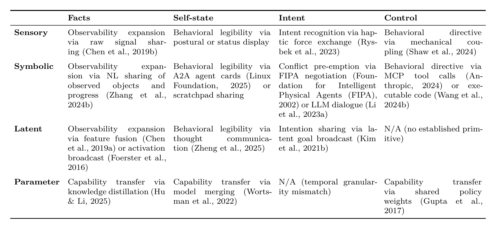
6.2 Communication Topology
Content sets the addressing demand. Facts can benefit any agent and favor broadcast (Foerster et al., 2016; Sukhbaatar et al., 2016), Intent is selectively directed to agents whose plans may conflict (Das et al., 2019; Jiang & Lu, 2018), Control targets a specific receiver under an authority relation and demands unicast (Anthropic, 2024; Foundation for Intelligent Physical Agents (FIPA), 2002), and Self-state is disclosed by targeted unicast or via a registry under a trust gradient. That gradient matters because exposure to untrusted receivers converts a coordination resource into an attack surface, consistent with the adversarial-communication risk demonstrated by (Blumenkamp & Prorok, 2021) and developed in §4.2. Format then prunes this demand to what is reachable, and how aggressively it prunes scales with the format’s penetration depth into the receiver’s model. Sensory and Symbolic formats interface only at the sensor or input/output boundary and impose light requirements: compatible sensors for the former, a shared vocabulary for the latter. Latent and Parameter formats reach into hidden layers or weights and bind tightly to the receiver’s architecture. Latent-level transfer requires a shared embedding space, and Parameter-level transfer presupposes base-model or subspace compatibility. The feasible topology is therefore the intersection of two filters: the content-driven addressing demand for the agents that need the message, and the format-driven envelope of the agents that can receive it at all. In LLM-agent systems this topology is increasingly learned rather than hand-set: the inter-agent communication graph is optimized end-to-end (G. Zhang, Yue, Sun, et al., 2025; Zhuge et al., 2024), selected dynamically per query (Z. Liu et al., 2024), pruned of redundant and adversarial edges (G. Zhang, Yue, Li, et al., 2025), or scaled to thousands of agents over directed-acyclic topologies (Qian et al., 2025), an explicit search over the communication topology itself.
6.3 Transmission Timing
Content sets the triggering rule: Facts fire on new observation, Intent is declared proactively before action so recipients can adapt, Control is issued reactively when a coordination gap is detected or authority must be asserted, and Self-state is disclosed at join and thereafter on state-change, gated by a learned relevance criterion (D. Kim et al., 2019; A. Singh et al., 2019). Format bounds the achievable rate. Per-message size, heavy for Sensory and Parameter payloads yet light for Symbolic and well-compressed Latent, caps the frequency a channel can sustain (Q. Chen, Ma, et al., 2019; Glaser et al., 2021). When the content-driven trigger fires faster than the format-driven channel can clear, latency rather than logic dictates timing, forcing learned scheduling (D. Kim et al., 2019) or attention-gated transmission (Jiang & Lu, 2018).
6.4 Coordination Purpose
Content sets the delivery requirement: which coordination failure the exchange must prevent. Facts tolerate loss through spatial and temporal redundancy, whereas prescriptive content, namely Intent and Control, and reliability-critical Self-state do not. Self-state carries trust-bearing capability and status information whose loss leaves the receiver with a stale model of its peer, so it requires reliable delivery even though it is descriptive, as recorded in Table 7. This asymmetry is consistent with documented MAS failure patterns (Cemri et al., 2025). Format dictates the failure mode: symbolic units are atomic and break on loss, latent vectors degrade gracefully under partial corruption, and parameter updates accumulate as staleness rather than misdirection. Tight delivery for directives therefore presupposes symbolic encoding: a degraded latent directive silently misdirects, whereas a corrupted symbolic one breaks detectably and can be resent. This delivery hazard compounds the separability gap that already empties the Latent\(\times\)Control cell, as Table 6 and Appendix E.1 detail. More generally, the Format-Content pair predicts which failures a channel can prevent.
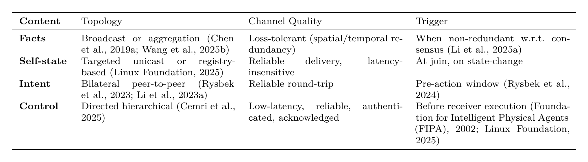
6.5 Cross-Paradigm Transfer
Transfer Principle. Across paradigms, communication mechanisms that share the same Format, or for some patterns the same Content type, instantiate the same structural pattern. We observe that a robustness or efficiency technique improving one such mechanism is then a candidate for its counterpart in another paradigm, moving the same Pentagram axis in the same direction. Appendix F catalogs these correspondences with per-paradigm examples, and porting applies the source technique to the target unchanged except for the paradigm-translated interface.
Several correspondences make this concrete. In Latent communication, DIAL’s differentiable inter-agent channel in MARL (Foerster et al., 2016) and InterLat’s direct latent exchange among LLM agents (Z. Du et al., 2026) share one encode-align-decode pattern, each compressing a sender’s state into a vector the receiver reads through a shared embedding space, so an alignment or compression advance for one is a candidate for the other. In Parameter-level transfer, TIES (Yadav et al., 2023) resolves sign conflicts and DARE (L. Yu et al., 2024) sparsifies redundant deltas when merging independently trained LLM weights, and federated-MARL aggregation faces the structurally identical interference, so TIES/DARE-style resolution is a candidate to improve federated-MARL aggregation. The same pattern appears across all three paradigms for factual conflict resolution, as attention-weighted fusion in cooperative perception (S. Wang et al., 2025), protocol creolization in Emergent Language (Harding Graesser et al., 2019), and multi-agent debate among LLMs (Du et al., 2024), each collecting competing claims and reconciling them into a revised consensus. Table 8 catalogs all eight correspondences with per-paradigm instances.
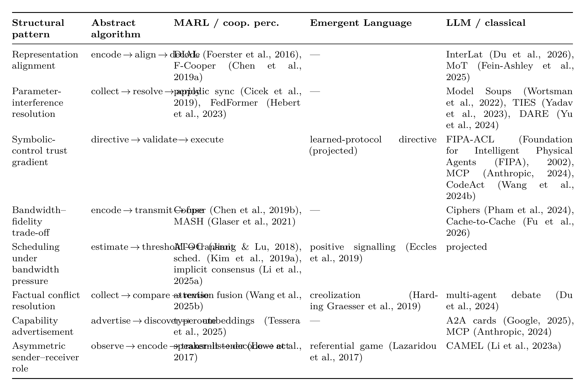
7 Future Directions
The analyses in §3–§5 surface structural gaps that span paradigms. We distill four research directions whose resolution would most directly extend the survey’s framework.
7.1 Quantitative Characterization of \(\mathcal{U}\)
Turning the taxonomic \(\mathcal{U}_h, \mathcal{U}_\theta\) of §2.2 into predictive tools requires four refinements, three of which sharpen Pentagram axes, Bandwidth and Robustness, while communication complexity bounds the number of messages a task requires:
Per-message capacity, linking the bits a single message can carry to information-bottleneck limits (Tishby et al., 2000; R. Wang et al., 2020), bounds the Bandwidth axis.
Lipschitz bounds on the receiver’s read-out formalize Robustness: the worst-case behavioral change is controlled by the product of the receiver’s Lipschitz constant, estimable for L2 self-attention read-outs (H. Kim et al., 2021), and the spectral norm \(\|E\|_{\text{op}}\) of the channel’s injection matrix.
Communication complexity, drawing on decentralized-decision theory (Bernstein et al., 2002; Goldman & Zilberstein, 2004; Pynadath & Tambe, 2002) and two-party communication bounds (Kushilevitz, 1997), could lower-bound the messages a task requires.
Rate-distortion of \(m\) (Gündüz et al., 2023) sets the minimum bits needed to convey a continuous quantity at a given task tolerance.
7.2 Heterogeneous Interoperability
Almost every mechanism surveyed in §3 assumes homogeneous agents, yet deployed ecosystems mix vendors, foundation models, and sensor suites. Latent and Parameter channels demand aligned representation spaces between every communicating pair, so a heterogeneous ecosystem of \(N\) agents needs a distinct alignment adapter for each of the \(O(N^2)\) ordered pairs, prohibitive at scale and brittle when agents join or leave. A shared communication manifold replaces these pairwise maps with a single common space that each agent aligns to once, reducing the cost to \(O(N)\); online recalibration then re-fits only the newcomers’ projections as membership shifts, rather than retraining all pairwise adapters. For LLM agents, natural language acts as an information bottleneck for agents with higher-dimensional representations (P. Zhou et al., 2025), which Latent and Parameter channels can bypass. At the systems level, explicit agent-integration protocols and instant-messaging architectures are beginning to weave heterogeneous, third-party agents into a single interoperable web (W. Chen, You, et al., 2025).
7.3 Composable Communication Architectures
Current systems fix a single communication format at design time, exploring the Format \(\times\) Content matrix one row at a time rather than composing across it. Adaptive format selection would let agents choose channels per message according to content, bandwidth, and receiver capability; early meta-protocols already select dynamically among structured routines, natural language, and generated code to trade off versatility, efficiency, and portability (Marro et al., 2024). Typed content slots would formalize messages as \(m = \langle m^{\text{fact}}, m^{\text{self}}, m^{\text{int}}, m^{\text{ctrl}} \rangle\), independently routing each slot.
7.4 Trustworthy Communication
Open deployments expose communication to strategic adversaries (Blumenkamp & Prorok, 2021). A subtler threat is covert signalling: LLM agents can collude through steganographic channels that conceal a payload inside fluent text (Motwani et al., 2024), and such channels can emerge unbidden from optimization pressure while resisting both passive monitoring and paraphrasing defences (Mathew et al., 2025). Parameter-level exchange is especially vulnerable since a single poisoned update durably reshapes the receiver. Existing methods treat all senders as equally trustworthy and the self-reported confidence of §4.2 is gameable, so credibility must be grounded in cross-source consistency, reputation tracking, and cryptographic attestation of parameter provenance.
8 Conclusion
This survey treats communication across MARL, Emergent Language, and LLM-based systems as one object: a perturbation of the receiver’s state, read off by the Format a message enters through and the Content it conveys. From this single view, two design principles hold regardless of paradigm: Format fixes which agents a message can reach, and Content sets the exchange’s addressing demand, its timing, and the failure it must prevent, with the feasible protocol their intersection. The same view reframes evaluation and prior work alike: the Communication Pentagram compares channels on dimensions intrinsic to the channel rather than the task, and mechanisms built independently across communities turn out to instantiate shared structures, so that behavior follows from where a mechanism sits in the Format\(\times\)Content space rather than from the paradigm that produced it. What the framework delivers now is commensurability, placing mechanisms from different communities on common ground; what it predicts is transfer, its Transfer Principle holding that a technique or prediction established for one mechanism is a candidate to carry to its structural counterpart in another paradigm rather than be rediscovered. We expect the next generation of multi-agent systems to be defined less by a single dominant format than by fluid composition across the Format \(\times\) Content space, and we intend this framework as the shared vocabulary that makes such composition, and its evaluation, a tractable science.
Limitations
This survey covers agent-to-agent communication across MARL, Emergent Language, and LLM-based systems. Human-agent communication and human-in-the-loop coordination are important, growing areas; we leave their comprehensive review to future work to keep the scope focused on agent-to-agent communication.
Coverage is broad but not exhaustive, and some recent or specialized work is underrepresented. The Communication Pentagram of §5 defines five evaluation axes with per-axis measurement procedures, but it has not been instrumented across the surveyed corpus. Bandwidth and Computational Cost follow from a protocol’s specification, whereas Robustness, Generalization, and Interpretability require perturbation sweeps, OOD splits, and interpretability probes, experiments that few surveyed methods ran systematically in their own evaluations.
Finally, the operator \(\mathcal{U}\) captures which state component a message perturbs, not how much it moves the receiver, leaving quantitative magnitude bounds to future work.
Broader Impact Statement
This work is a survey that synthesizes existing literature on multi-agent communication and introduces no new datasets, trained models, or deployed systems. Its primary outputs are a taxonomy (Format \(\times\) Content) and an intrinsic evaluation framework (the Communication Pentagram), both descriptive rather than operational. We do not anticipate direct misuse risks beyond those inherent to the surveyed methods. A residual indirect concern is that two of the formats we systematize pose oversight challenges absent from human-readable Symbolic messages: Latent-level channels transmit continuous vector representations that no external observer can directly read (§3.3), and Parameter-level transfer can alter a receiver’s weights \(\theta\) through a single injected update that persists across sessions until explicitly overwritten or corrected (§3.4). By naming and organizing these channels, our taxonomy could make adversarial or covert agent-to-agent signaling more salient. The same systematization, however, equally supports defensive analysis, auditing, and interpretability research, since identifying where a channel is unreadable or where an injected update persists in \(\theta\) until corrected is precisely what a monitoring or Byzantine-resilient defense must target (§5.3).
Use of Large Language Models
We used large language models to assist with wording revisions, citation formatting, and notation consistency across sections. All research ideas, taxonomy choices, paper-to-cell assignments, and Pentagram evaluations were produced and verified by the human authors. The AI did not generate research content, fabricate citations, or make editorial decisions on our behalf. The authors take full responsibility for the final manuscript.
Appendix A: Existing Surveys and Taxonomies
This appendix systematically compares prior surveys of multi-agent communication, treating each surveyed work along two dimensions: as a literature body, the methods it reviews, and as a taxonomic vocabulary, the conceptual axes it imposes on the field. Section A.1 maps sixteen prior efforts onto a feature matrix that records both dimensions. Section A.2 discusses each of the three paradigm-specific clusters of MARL, Emergent Language, and LLM-based agents in turn, leading with the cluster’s dominant taxonomic vocabulary. Section A.3 provides a focused critique of the cross-paradigm efforts, treating the two communication-taxonomy proposals among them as the principal targets.
A.1 Feature Comparison of Prior Surveys
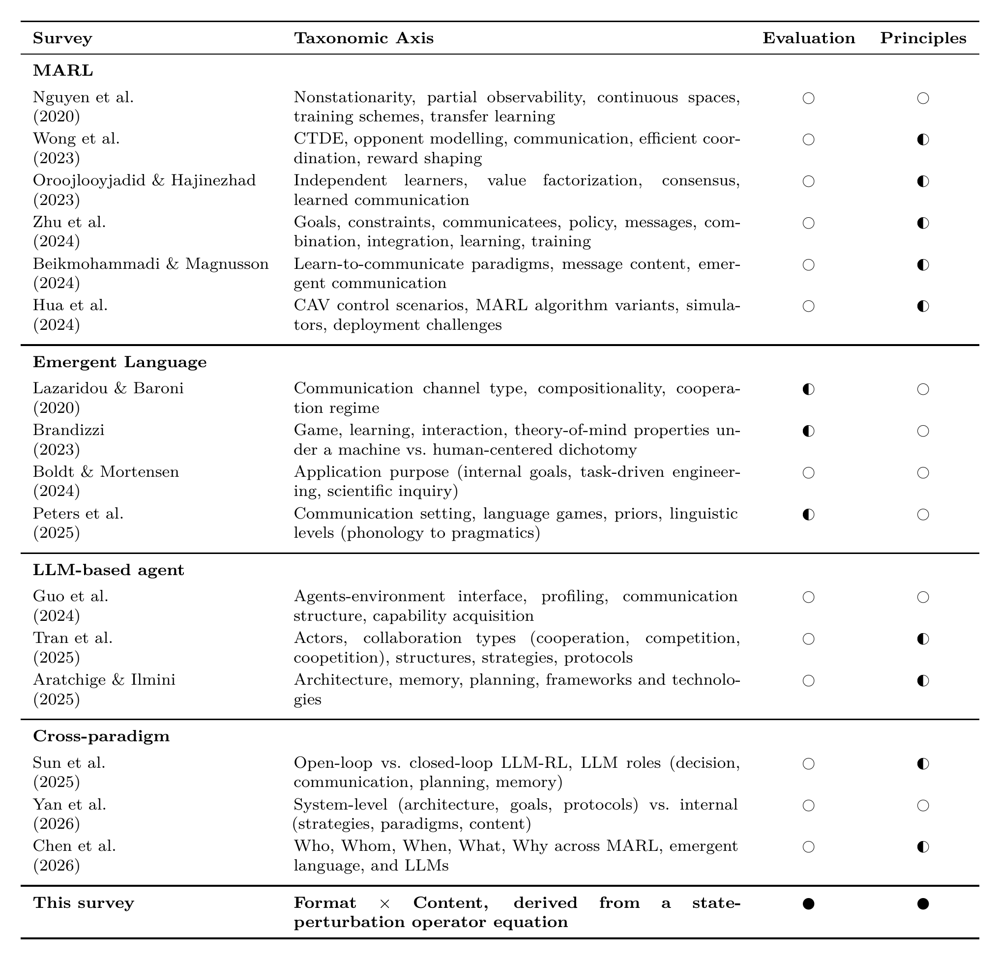
Table 9 catalogs sixteen prior survey and review articles on inter-agent communication, grouped by paradigm. For each we record its taxonomic axis, the conceptual vocabulary it imposes on the field, and then score two further properties with the legend defined in the caption: whether it proposes a standardized intrinsic Evaluation framework, and whether it states operational Principles linking the taxonomy to design decisions.
Several patterns are visible in Table 9. First, no prior survey simultaneously treats Format and Content as orthogonal first-class axes. At best, individual surveys partially recognize one axis. Second, only three works attempt to bridge MARL, EL, and LLM-based agents simultaneously, and none proposes a channel-intrinsic, cross-paradigm evaluation framework, though some LLM-agent protocol surveys propose intrinsic axes that are transport or network ones scoped to a single paradigm, as the cross-paradigm discussion below details. Third, none of the existing surveys provides standardized intrinsic evaluation dimensions analogous to our Communication Pentagram. Evaluation is treated either as task-specific reward or as a paradigm-specific property such as compositionality for EL, mAP for cooperative perception, or accuracy for LLM agents.
A fourth pattern concerns operational principles. Linking the taxonomy to who-when-why decisions is partial across the MARL cluster, which exposes routing and scheduling rules, the LLM-agent cluster, and the cross-paradigm cluster, including the Five Ws, whose axes are themselves operational, but no prior framework treats Who/When/Why as derivable from a Format \(\times\) Content cascade in §6.
A.2 Per-Paradigm Discussion
MARL communication surveys.
MARL communication surveys organize the field through a message-passing taxonomy centered on what to communicate, whom to address, when to transmit, and how to integrate received messages. This vocabulary precisely captures the design space of differentiable inter-agent channels and underwrites a rich body of work on bandwidth scheduling and message-routing efficiency. Nguyen et al. (2020) provide a broad survey of deep MARL challenges in which communication is one of several topics. Oroojlooyjadid & Hajinezhad (2023), Wong et al. (2023), C. Zhu et al. (2024), and Beikmohammadi & Magnusson (2024) cover communication within broader MARL algorithmic taxonomies such as learning paradigms, value factorization, opponent modeling, and message-routing mechanisms. Hua et al. (2024) review the connected-autonomous-vehicle subdomain, where communication is one of several control-relevant challenges. What this taxonomy structurally cannot see is the Format axis itself. Latent-vector messaging is treated as the implicit default modality rather than as one cell in a broader space, so the existence of Symbolic, Sensory, and Parameter alternatives is invisible to the taxonomy.
Emergent Language surveys.
Emergent Language surveys organize the field through a protocol-property taxonomy centered on compositionality, grounding, and language evolution within a fixed symbolic-discrete channel. Peters et al. (2025) develops this vocabulary most fully, building on themes reviewed by Lazaridou & Baroni (2020). Brandizzi (2023) reviews emergent communication research with an emphasis on human-like language properties, and Boldt & Mortensen (2024) survey applications of emergent communication across machine learning, NLP, linguistics, and cognitive science. The shared assumption across this cluster is that the communication channel is symbolic-discrete, a learned codebook, and the central question is how structure arises within that channel. Format is therefore an implicit constant rather than an axis of comparison, and content types other than “referential description of an external object” are rarely considered as a distinct category. The vocabulary captures language-evolution phenomena precisely but cannot accommodate the Latent and Parameter Formats our framework treats as first-class, such as continuous-activation channels like DIAL-style differentiable messaging, which is natively Latent, or weight-level coupling like shared-weights MARL, which is natively Parameter.
LLM-based agent surveys.
LLM-based agent surveys organize the field through an orchestration-and-roles taxonomy centered on team workflow, role specification, and collaboration patterns. Guo et al. (2024) provide a broad survey of LLM-agent capabilities and architectures, with communication treated alongside planning, tool use, and memory. Tran et al. (2025) focus specifically on collaboration mechanisms, role design, and coordination protocols. Aratchige & Ilmini (2025) survey technological aspects of LLM-based multi-agent systems, covering architecture, memory, planning, and frameworks. Across this cluster, natural language is the default and often the sole communication channel. Latent-state sharing and Parameter-level transfer between LLM agents are rarely surveyed, despite an active and rapidly growing literature on KV-cache sharing, model merging, and adapter exchange that we cover in Sections 3.3 and 3.4. The orchestration-and-roles taxonomy captures team structure and conversational protocol but cannot represent format choices below the natural-language surface.
A.3 Cross-Paradigm Surveys
Three recent works attempt explicit cross-paradigm bridging across MARL, EL, and LLM-based agents. Sun et al. (2025) survey the challenges and future directions of LLM-based multi-agent decision-making, bridging MARL and LLM-agent perspectives by framing inter-agent coordination and communication as central open problems; their contribution is this challenges-and-directions discussion rather than a communication taxonomy, so we do not discuss it further here. The remaining two efforts, Chen et al.’s Five Ws and Yan et al.’s Beyond Self-Talk, are taxonomy proposals as much as they are literature reviews, and we treat each along two dimensions: as a taxonomic vocabulary and as a literature body.
We qualify our evaluation-framework claim against one class of near-counterexample. LLM-agent protocol surveys do compare protocols along intrinsic-looking axes: Y. Yang et al. (2025) along efficiency, scalability, security, and interoperability, and Kong et al. (2025) along security risks and defenses. These are transport- and network-protocol-engineering properties of message-passing infrastructure, scoped to LLM agents; they are neither derived from a state-perturbation operator on the receiver’s \(\langle h,\theta\rangle\) nor applied across MARL and Emergent Language. Our claim is therefore narrower and specific: no prior survey offers a channel-intrinsic, cross-paradigm evaluation framework, axes that attach to the sender-receiver channel itself and are comparable across all three paradigms, which is what the Communication Pentagram of §5 supplies.
The Five Ws framework.
Chen et al. (2026) organize inter-agent communication along five parallel dimensions: Who, Whom, When, What, and Why. As a taxonomic vocabulary, the Five Ws offer a cross-paradigm cross-cutting lexicon that has so far been missing from the paradigm-specific surveys above, and it is, to our knowledge, the first to offer a single uniform vocabulary that actually decomposes all three paradigms, in contrast to Yan et al.’s LLM-centric split and Sun et al.’s non-taxonomic bridging argument. Two structural limitations motivate the present framework. First, the Five Ws note inter-dimensional dependencies only informally, without deriving them from the message itself. Once the message itself is specified along Format and Content, the remaining dimensions, Who, Whom, When, and Why, are no longer freely chosen but are constrained by the information being transmitted, as §6 shows. Second, because the framework organizes known design choices descriptively rather than deriving structural recurrence from a message-substrate pair, it catalogs emerging cross-paradigm mechanisms such as heterogeneous inter-model latent-state exchange and cross-model parameter transfer or merging without surfacing the cross-axis constraints they impose: it records that such mechanisms occur but not which Format-Content pairings render them feasible.
As a literature body, Chen et al. cite methods across paradigms but do not propose any criterion for what counts as a paradigm-invariant analogy, the gap that Appendix F addresses. Two concrete consequences mark the shift from this descriptive lexicon to a structural account. First, the Pentagram of §5 makes intrinsic evaluation dimensions explicit and channel-attributable rather than task-specific. Second, the N/A cells in Table 6 become concrete predictions about structural mismatches, developed in Appendix E.1, that a descriptive enumeration cannot anticipate. The Five Ws remains a useful entry-point lexicon, while the present framework supplies the structural account that turns the lexicon into design-time constraints.
Side-by-side comparison.
The difference between Format\(\times\)Content and the Five Ws is ontological rather than enumerative. The Five Ws asks W-questions of a message-as-utterance, namely who, what, whom, when, and why; these categories are pragmatic and treat the message as an opaque parcel, with no slot for how the parcel enters the receiver’s computation. Format\(\times\)Content indexes messages by where \(\mathcal{U}\) writes into the receiver state, defined in §2, making architectural depth a first-class axis.
Consider Cache-to-Cache (T. Fu et al., 2026), and contrast how each framework indexes it. The Five Ws records it most naturally as “What \(=\) KV cache, Whom \(=\) receiver, When \(=\) at decoding”; sub-enumerating “What” refines a single W-question but never yields a substrate-semantics product. Format\(\times\)Content instead records Latent\(\times\)Facts acting through \(\mathcal{U}_h\), and architecture coupling then follows mechanically from that substrate.
Two predictions fall out directly. First, a KV cache from a LLaMA-2-7B sender cannot enter a Mistral-7B receiver without a learned aligner, because Mistral uses grouped-query attention while LLaMA-2-7B does not, so the cache shapes are incompatible. Second, even between identical models, a cache from layer 3 cannot be grafted at layer 7 without a learned, depth-aware layer-to-layer mapping. The Symbolic format supplies the escape hatch: the same two agents can exchange a plain-English summary of the same information freely, because Symbolic carries no such binding.
The cascade in §6 reads off similarly. Once Latent\(\times\)Facts is fixed, Who narrows from “any LLM peer” to “peers with matching head structure and layer count”, broadcast becomes point-to-point unless the team is architecturally homogeneous, and the Latent\(\times\)Control N/A entry in Appendix E.1 becomes a structural prediction rather than a literature gap. The Five Ws can document each of these failures retrospectively but cannot generate the prediction list, because the failures entail from substrate, not from the answer to “What”. Refinement of “What” cannot recover any of this: it multiplies values within one axis and never generates constraints between axes.
Beyond Self-Talk.
Yan et al. (2026) organize inter-agent communication through a binary distinction between system-level communication, covering architecture, goals, and protocols, and system-internal communication, covering strategies, paradigms, objects, and the content of inter-agent messaging. As a taxonomic vocabulary, the distinction usefully separates the outer interface of a multi-agent system from its internal communicative substrate, a perspective absent from the paradigm-specific surveys above. The vocabulary’s limitation is its granularity. The binary system-level / system-internal split does not expose a Format axis: all four of our Formats, Sensory, Symbolic, Latent, and Parameter, sit within Yan et al.’s system-internal category as alternative operational substrates without further differentiation, and Content-type distinctions among Facts, Self-state, Intent, and Control are absent entirely. As a literature body, Beyond Self-Talk is LLM-centric. MARL and EL methods are mentioned but not decomposed under the same vocabulary, so the cross-paradigm bridging that the binary framing promises remains aspirational rather than demonstrated. Like the Five Ws, Beyond Self-Talk does not supply a criterion for distinguishing structural cross-paradigm parallels from surface ones.
Appendix B: Construction of the Taxonomies
Sections 2.3 and 5 state the Format and Content constructions and the Pentagram’s positioning in summary form. This appendix gives the full account: how the Format taxonomy is built from the operator equation in Appendix B.1, how the Content axes are grounded in speech act theory in Appendix B.2, and how the five Pentagram dimensions are positioned in Appendix B.3, together with the boundary cases and the alternative axes we considered.
B.1 Format: From Operator Equation to Four Categories
The four Formats are built in two steps from the agent definition of Section 2.1 and the operator equation of Section 2.2. Each step follows a structural fact already in place in Section 2: Step 1 the two-component state \(\langle h, \theta\rangle\), and Step 2 the three-level pipeline that assembles \(h\). The two steps organize the four Formats together, with neither singled out as the primary axis.
Step 1: Operator partition.
An agent’s state is the tuple \(\mathcal{S}=\langle h, \theta\rangle\), with no third component. Any message \(m\) that perturbs the receiver therefore modifies \(h\), modifies \(\theta\), or both. The operator equation makes the partition operational: messages whose mechanical effect is captured by \(\mathcal{U}_h\) modify \(h\) alone, and messages whose mechanical effect is captured by \(\mathcal{U}_\theta\) modify \(\theta\). Some mechanisms touch both \(h\) and \(\theta\); in every case in our review the joint effect decomposes into a \(\mathcal{U}_h\) step followed by a \(\mathcal{U}_\theta\) step, so it is classified by its two components rather than calling for a third, joint operator. The \(\mathcal{U}_\theta\) class supplies a single Format we name Parameter, in which the receiver’s weights are updated and its decision function \(f(\cdot, \theta)\) is itself modified. The \(\theta\) side admits no analogous depth stratification: a weight update modifies \(f(\cdot, \theta)\) as a whole, with no intermediate representational boundary at which a message could instead enter, so \(\mathcal{U}_\theta\) contributes exactly one Format whereas \(\mathcal{U}_h\) is further organized by entry depth in Step 2.
Step 2: Depth partition within \(\mathcal{U}_h\).
The context \(h\) is not flat but assembled through a representational pipeline with three identifiable levels: raw observations at the sensor interface, discrete tokens at the parsing or tokenization boundary, and continuous internal representations on which the decision function operates. Even when an agent collapses adjacent stages, as in an end-to-end model without explicit tokenization, a perturbation \(\mathcal{U}_h(\mathcal{S}, m)\) enters \(h\) at one of these three levels. Entry at the sensor interface yields Sensory format, entry at the parsing boundary yields Symbolic format, and entry at the internal-representation layer yields Latent format. What makes each a top-level Format cut rather than a within-format refinement is a single rule: a boundary is a top-level cut when crossing it changes the kind of structure sender and receiver must pre-share, namely compatible sensors at the sensor interface, then a shared vocabulary at the parsing boundary, then aligned representation manifolds at the internal layer, with a compatible weight space for \(\mathcal{U}_\theta\), the coupling-prerequisite ladder of §3. Two boundaries that demand the same kind of prerequisite are refinements within one Format rather than new Formats, which is why the Latent strata of output-layer, intermediate, and KV-cache refine the \(\mathcal{U}_h\) side rather than multiply it. An architecture exposing a further representational boundary, for instance an external memory or retrieval store read at a distinct interface from the live context, would organize this side into more than three depths.
Scope and boundary cases.
The two steps together yield \(1 + 3 = 4\) Formats, covering every mechanism in our review: each either modifies \(h\) at one of three depths or modifies \(\theta\) directly. Boundary cases resolve by their functional interface. Environment-mediated stigmergic communication reduces to in-scope operators, a sender-side action that writes to a passive environment store followed by a receiver-side Sensory \(\mathcal{U}_h\) read of that store, so it is a composition of two existing operators rather than a new one, as Section 2.2 notes. Pure analog broadcast-superposition over a shared physical medium has no attributable single sender and is set aside at the definition of \(m_{i\to j}\). The remaining cases each resolve cleanly: KV-cache transfer enters at the internal-representation layer and is Latent even though it pertains to a cached state, adapter exchange installs into \(\theta\) and is Parameter even though the adapter is a low-rank decomposition, and structured-token streaming enters at the parsing boundary and is Symbolic even though the underlying transport may be a byte stream.
B.2 Content: The Referent and Function Axes
The four Contents partition the semantic space along two axes: referent, whether the message concerns the sender’s internal state or something external to the sender, and function, whether the message describes a state of affairs or prescribes one. The four resulting cells are Facts as external and descriptive, Self-state as internal and descriptive, Intent as internal and prescriptive, and Control as external and prescriptive.
Where the two axes come from.
The function axis follows the central distinction of speech act theory, Austin’s separation of locutionary content from illocutionary force (Austin, 1962), refined by Searle’s classification of illocutionary classes (Searle, 1976). Descriptions and prescriptions impose qualitatively different obligations on the receiver: a description invites verification, while a prescription invites compliance or refusal. The referent axis is the further distinction that separates self-binding from other-binding under prescriptive messages, and self-reports from world-reports under descriptive messages. Together the two axes give the four coordination stances we observe across MARL, EL, and LLM-based agent systems. The self-referential stances, Self-state and Intent, additionally connect to the modal-epistemic-logic tradition that formalizes nested belief and knowledge, from Hintikka’s logic of knowledge and belief (Hintikka, 1962) through the knowledge-based analysis of distributed systems (Fagin et al., 1995) to Halpern and Moses’s account of common knowledge and the coordinated-attack impossibility (Halpern & Moses, 1990). We take an operational rather than a modal stance, but this lineage situates the trust-calibration and commitment-credibility problems that Self-state and Intent raise once a truthful self-report can no longer be presumed.
How the framework handles other candidate axes.
Six further distinctions are natural to consider; each is either handled elsewhere in the framework or falls outside the coordination mechanisms we model. Modality, verbal versus non-verbal or continuous versus discrete, is carried by Format in Section 3. Addressee structure, unicast versus multicast versus broadcast, is set by the communication-topology dimension of the operational principles in Section 6, where addressee multiplicity follows from content, with Facts favouring broadcast, Control demanding unicast, and Intent selectively directed, and is then pruned by Format. Temporal scope, past versus present versus future, is largely subsumed by function, since descriptive messages reference an actual or past state and prescriptive messages a future one. The other three are properties of a message instance rather than content types: truthfulness, true versus false, is read by the Pentagram’s Robustness dimension; commitment strength, tentative versus binding, is discussed in Section 4.3.1; and politeness or face plays no direct role in the coordination mechanisms we model.
Mapping to Searle’s illocutionary classes.
Searle distinguishes five illocutionary classes: assertives, directives, commissives, expressives, and declaratives (Searle, 1976). Our four-fold partition relates to this taxonomy as follows. Assertives split by referent into Facts about the world and Self-state about the sender, a split Searle leaves implicit. Directives map to Control, in which the sender binds the receiver to an action. Questions are, in Searle’s scheme, a subclass of directives that solicit an informative reply, so interrogatives also map to Control, the prescribed action being the receiver’s return of a descriptive report. Commissives map to Intent, in which the sender binds itself to a planned action. Expressives, which voice the speaker’s attitude toward a presupposed state of affairs such as thanking or apologizing and carry no direction of fit, have no coordination-relevant role here. Declaratives change institutional facts by performative force, as in “I declare the meeting adjourned”; we treat such an act as a Fact reporting the now-changed institutional state, optionally paired with a Control constraint on the agents that must enforce it. Our partition therefore covers the four coordination-relevant stances rather than the full space of illocutionary acts.
Our partition imposes a single uniform axis, referent, across both halves: it agrees with Searle’s directive/commissive cut on the prescriptive side and refines Searle’s single assertive class on the descriptive side. The result is a compact two-axis partition that captures the four coordination stances we observe across MARL, EL, and LLM-based agent systems. The axes and the stances are mutually defining, so the partition’s value rests on its downstream consequences, the compatibility cascade and the two empty cells of §6, rather than on its being uniquely forced.
B.3 Pentagram: Positioning the Five Dimensions
The Communication Pentagram of Section 5 is not built from the operator equation in the way Format and Content are.
The contribution is the shift in evaluation target.
Each paradigm already has a rich evaluation tradition: cooperative reward in MARL, detection mAP in cooperative perception, and benchmark accuracy in LLM agents each measure how well the joint system performs a task. These task-centric metrics are incommensurable across paradigms because each conflates the contribution of the communication channel with that of the agent’s own policy and training data. The Pentagram shifts the evaluation target from the downstream task to the channel itself, measuring properties of the protocol that are intrinsic to the sender-receiver pair and independent of the task the pair happens to serve.
The five dimensions group the channel comparisons that recur.
Given the choice to evaluate the channel rather than the task, the five dimensions fall into two families that recur in cross-paradigm comparison. Cost splits into Bandwidth, the data volume of the channel, and Computational Cost, the processing burden over the non-communicative baseline. Quality splits into three failure modes a protocol can exhibit: degradation under perturbation as Robustness, degradation outside the conditions of its establishment as Generalization, and opacity to an external observer as Interpretability. Composite quantities such as latency follow from these, decomposing into a channel-transmission delay set by Bandwidth and a receiver processing delay set by Computational Cost, so they need no separate axis. The five span the comparisons we have found necessary across the three paradigm traditions.
Implication for the rest of the framework.
Because the Pentagram’s grouping is pragmatic rather than derived, the operational principles of Section 6 and Appendix E treat Format and Content as load-bearing taxonomies and treat the Pentagram dimensions as evaluation targets rather than as further axes of structural derivation. A future revision that added or merged Pentagram dimensions would leave the Format \(\times\) Content cascade intact. Symmetrically, the Pentagram dimensions apply to any future taxonomy that fits the operator equation, since they are properties of the channel rather than of the partition.
Appendix C: Classification Disambiguation
This appendix consolidates in one place the decision rules for the boundary cases of the Format \(\times\) Content taxonomy. Each rule is also stated where the relevant subsection first introduces the category.
C.1 Format-level boundaries
Sensory vs. implicit communication.
Rule. Implicit communication is a sub-mode within the
Sensory level, not a separate dimension. The channel remains Sensory in
both cases. Only the sender’s intentionality differs: an explicit signal
is encoded for the receiver, an implicit signal is inferred by the
receiver from observable physical state such as trajectories, gaze,
contact forces, or light flashes.
Stated in. §3.1.
Symbolic vs. Latent.
Rule. The unit transmitted on the wire determines
classification. Discrete code indices, including learned tokenizers such
as VQ-VAE bottlenecks under an emergent vocabulary, fall under Symbolic.
Continuous vectors, including int8-quantized continuous activations
whose discrete bins do not function as a vocabulary, fall under
Latent.
Why. Codebook learnability and bit-precision are orthogonal to
the categorical distinction. The operative test is whether the
transmitted units function as a vocabulary: a set of discrete
indices does so when the indices are arbitrary labels whose meaning is
fixed by a shared codebook rather than by their numeric value, so that
nearby indices need not encode nearby meanings, as with VQ-VAE codebook
entries. Bit-precision bins fail this test: bin \(k{+}1\) is a finite-precision approximation
of a value adjacent to bin \(k\), so
the indices retain the metric structure of the underlying continuous
signal and carry no vocabulary semantics. The Symbolic definition of
§3.2 already includes “shared or emergent vocabulary”, which subsumes
VQ-VAE indices, while int8 quantization is a bandwidth-saving encoding
of a fundamentally continuous signal.
Stated in. §3.2, §3.3.
Parameter communication vs. training.
Rule. The receiver integrates an external parameter
artifact, whether weights, \(\Delta\theta\), a mask, or a task vector,
into \(\theta\) by assignment or
algebraic composition, without running a loss-driven gradient step on
the artifact. Sender-side training and event cadence are
orthogonal.
Why. Federated averaging is included, since the aggregator
integrates received weights by weighted sum, identical to model merging.
Knowledge distillation is excluded, since the receiver runs gradient
descent on the transmitted logits, training on a Latent message. Solo
editing is excluded at the multi-agent level, since §2.2 requires \(i \neq j\). Table 10 applies the rule to
representative cases.
Stated in. §3.4.
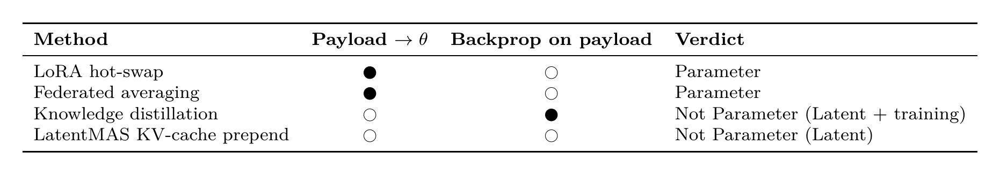
C.2 Content-level boundaries
Facts vs. Self-state.
Rule. Claims that the receiver can in principle verify
against external ground truth are Facts. Statements that disclose the
sender’s own epistemic state, including beliefs about external state,
are Self-state. The same proposition can fall under either category
depending on what is actually transmitted. A bare measurement, “obstacle
at 5 m”, that the receiver can re-derive from shared sensors is a Fact;
the sender’s confidence-qualified estimate of that measurement, “5 m,
confidence 0.8”, is Self-state, because the verifiable object is now the
sender’s calibration, not the distance. The test: ask whether the
receiver could in principle reproduce the claim from external ground
truth, making it a Fact, or only by trusting the sender’s internal
model, making it Self-state. In the latter case the receiver must
calibrate trust in the sender’s perception rather than directly verify
the underlying observation.
Stated in. §4.1, §4.2.
C.3 Empty cells in the Format \(\times\) Content matrix
The two N/A entries in Table 6, Latent \(\times\) Control and Parameter \(\times\) Intent, are structural channel-payload mismatches, not proofs of impossibility: the former because a directive must be recognizable as such and an opaque vector conflates payload with prescriptive force, the latter because episodic intent has no natural expiry in persistent weights. Both are developed in Appendix E.1 and remain open to a primitive that supplies the missing structure, such as a typed latent sub-channel or an expiring adapter.
Appendix D: Pentagram Measurement Details
This appendix elaborates the measurement procedures for each Communication Pentagram dimension introduced in Section 5. The justification for selecting these five dimensions, including the rationale that they are pragmatic groupings of cost and quality concerns rather than a derived partition, is given in Appendix B.3. The present appendix takes the five dimensions as given and provides operational detail, namely formulas, normalization conventions, and known measurement pitfalls, sufficient for reproducible comparison across paradigms. Table 11 summarizes how each format fares on the five dimensions.
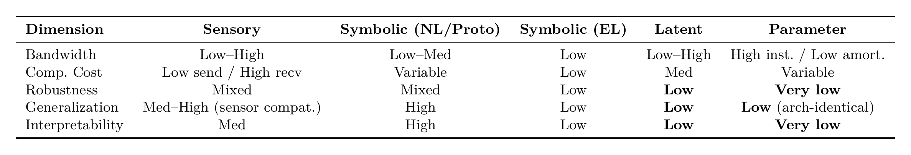
D.1 Cross-Format Evaluation Profile
Because each format instantiates \(\mathcal{U}\) at a different architectural depth, the five evaluation dimensions exhibit format-specific profiles. For the quality dimensions of robustness, generalization, and interpretability, certain properties are structurally inherent to the format, fixed by the architectural depth at which \(\mathcal{U}\) acts and not removable by implementation choices, while others remain conditional on design. The bullets below tag a property inherent only when it follows directly from the format’s depth; Sensory and Symbolic carry no inherent ratings because both admit substantial implementation-level variation.
Sensory. Bandwidth spans a wide range from thumbnails to video. Sender cost is negligible but receiver-side integration of \(N{-}1\) peers’ inputs can be substantial. Robustness is mixed because natural signal redundancy provides error tolerance while physical channels introduce noise. Generalization benefits from minimal architectural coupling, though sensor compatibility is required. Interpretability is moderate: human-perceivable, but semantics require processing.
Symbolic. Cost ranges from cheap protocol parsing to expensive autoregressive LLM generation. Robustness is mixed for NL and fixed protocols because discrete boundaries aid error detection while semantic ambiguity remains, whereas emergent language is less robust given its lack of standardized error-detection conventions. NL and fixed protocols yield high interpretability and broad interoperability, whereas emergent language is opaque (Lowe et al., 2019) with often-limited generalization (Lazaridou et al., 2017).
Latent. Three properties are inherent: low robustness, with no discrete boundaries and sensitivity to perturbations (Tu et al., 2021); low generalization, being architecture-coupled; and low interpretability, opaque to inspection.
Parameter. Three properties are inherent: lowest robustness, since direct write access to \(\theta\) creates the largest attack surface; low generalization, since it requires architectural identity; and lowest interpretability, since weight matrices resist semantic analysis.
The three quality dimensions are additionally governed by content type, which the main text develops per axis: robustness by content detectability in §5.3, generalization by the descriptive-to-prescriptive ordering in §5.4, and the interpretability minimum by content level in §5.5.
D.2 Bandwidth Measurement
Per-message bandwidth \(B(m) = |m|_{\text{bits}}\) is straightforward in principle but requires explicit conversion across paradigms because reporting conventions differ. A latent vector of dimension \(d\) at floating-point precision \(p\) contributes \(B(m) = d \cdot p\) bits, so a 128-dimensional float32 vector is 4,096 bits. A Symbolic message of \(L\) tokens drawn from vocabulary \(\mathcal{V}\) contributes \(B(m) = L \cdot \lceil \log_2 |\mathcal{V}| \rceil\) bits in the information-theoretic minimum: byte-pair-encoded token IDs need \(\lceil \log_2 |\mathcal{V}| \rceil\) bits each, \(\sim\)15–17 bits for typical \(|\mathcal{V}|\) of \(32\)k–\(128\)k, but are commonly transmitted as 16–32-bit integers, while raw text sent as UTF-8 costs 8–32 bits per character. For KV-cache transmission under multi-head attention, \(B(m) = 2 \cdot L_{\text{layers}} \cdot L_{\text{tokens}} \cdot d_{\text{head}} \cdot p\) per attention head, summed over heads; under grouped-query or multi-query attention the sum runs over the \(n_{\text{kv}}\) key/value heads, reducing the cache by the query-to-KV group factor.
Aggregate bandwidth per step scales with topology. All-to-all communication yields \(B_{\text{agg}} = O(N^2)\), broadcast from a single source yields \(O(N)\), and targeted unicast can be \(O(1)\). The amortized form is especially important for Parameter-level communication, where a single transfer of \(|\Delta\theta|\) bits supports \(K\) subsequent decisions. The amortized per-decision bandwidth is \(|\Delta\theta|/K\), which can fall below the per-decision bandwidth of any context-level format when \(K\) is large.
Measurement pitfall. Bit-normalized values are cross-paradigm comparable but do not capture semantic density: a 100-token natural-language message and a 100-dimensional latent vector at int8 precision have similar bit counts but very different information content. Reporting both raw bits and a task-anchored efficiency metric such as bits per unit of coordination benefit avoids this confound.
D.3 Computational Cost Measurement
The marginal cost ratio \(C_{\text{comm}} = (F_{\text{encode}} + F_{\text{decode}})/F_{\text{base}}\) requires care in defining the baseline \(F_{\text{base}}\). The natural choice is the FLOPs of the same agent operating without communication. For MARL agents this is the policy network’s forward pass. For LLM agents this is one autoregressive generation pass without communication-handling overhead. Cross-paradigm comparison requires that all three quantities, encode, decode, and base, be measured on the same reference hardware profile and reported as dimensionless ratios rather than wall-clock time, which depends on extrinsic factors such as cache effects, memory bandwidth, and hardware generation.
Receiver-side scaling depends on topology. All-to-all broadcast yields \(O(N^2)\) receiver-side cost. The scheduling and attention mechanisms of §5.2 act on it differently, learned scheduling lowering the order toward \(O(N \log N)\) or \(O(N)\) depending on its structure, whereas relevance-weighted attention only reweights the all-to-all sum without changing its order. In LLM agent systems, receiver cost additionally grows with dialogue length \(T\) due to context-window accumulation. Summarization and selective retention strategies are explicitly designed to keep this cost bounded.
Measurement pitfall. The encode/decode split is implementation-dependent. A Latent-format method that compresses on the sender side moves cost from \(F_{\text{decode}}\) to \(F_{\text{encode}}\) without changing the total. Reporting both quantities separately rather than just the sum is necessary for fair comparison.
D.4 Robustness Measurement
Robustness is quantified by sweeping perturbation severity and reporting the normalized performance gap \(\tilde{\Delta}(\phi) = [\text{perf}(\mathcal{U}(\mathcal{S}_j, m)) - \text{perf}(\mathcal{U}(\mathcal{S}_j, \phi(m)))] / \text{perf}(\mathcal{U}(\mathcal{S}_j, m))\), the normalized counterpart of the absolute gap \(\Delta\) in §5.3. Three perturbation classes admit standardized parameterization. Gaussian channel noise adds zero-mean noise with calibrated SNR, and reported curves should span at least three orders of magnitude in SNR. Message dropout drops each message independently with probability \(p\), and reported curves should span \(p \in [0, 1]\) with sufficient resolution near the critical regime. Adversarial injection replaces a fraction of messages with worst-case content under a defined threat model, and the threat model must specify the adversary’s information access, whether white-box, black-box, or gray-box, and budget.
The two defense families of §5.3 are complementary and should be measured separately. Training-time defenses improve the model’s intrinsic perturbation tolerance, whereas deployment-time defenses filter or correct corrupted messages at the receiver.
Format-specific attack surfaces. Attack vectors specialize by Format. Sensory channels admit physical-signal spoofing and sensor poisoning. Latent channels admit adversarial activation injection that subverts the receiver without changing any discrete message (Tu et al., 2021). Symbolic channels admit prompt injection and persona attacks. Parameter channels admit federated backdoors that persist across sessions (Bagdasaryan et al., 2020). Defenses correspondingly specialize, motivating multi-modal cross-checking and provenance verification beyond single-frame consistency.
D.5 Generalization Measurement
Generalization is measured as the performance gap between in-distribution and out-of-distribution conditions, with three OOD axes treated independently. Environment generalization varies the layout, dynamics, or stochasticity of the environment while holding the task constant. Task generalization varies the reward function or goal specification while holding the environment constant. Heterogeneous-agent generalization introduces a new agent of different architecture, different training distribution, or both, that was not present during the protocol’s establishment.
For EL specifically, the topographic similarity score measures the alignment between message-space and referent-space distances, and has conventionally been used as a compositionality proxy for predicting generalization to unseen referent combinations. However, the topographic-similarity-generalization correlation is not always strong, and direct OOD evaluation is preferable to reliance on compositionality proxies (Chaabouni et al., 2020; Kharitonov & Baroni, 2020).
Measurement pitfall. Per-axis OOD splits must hold all other axes constant. Otherwise, observed generalization gaps cannot be attributed to a specific cause. Many published evaluations conflate environment and task generalization, making cross-paper comparison difficult.
D.6 Interpretability Measurement
Interpretability is the most contested dimension because no single metric captures all three levels of token, message, and intent. Available methods include interpretable-by-design emergent agent codes (Dessı̀ et al., 2021) for token-level structure, topographic similarity (Peters et al., 2025) for message-level structure, human-readability studies of pictographic and sketch-based codes (Mihai & Hare, 2021; Spiegel et al., 2025), bidirectional-protocol analyses (Wolff et al., 2024) of message grounding, and role-instructed cooperation analyses (G. Li et al., 2023) for intent-level analysis in NL communication.
Lowe et al. (2019) document several pitfalls in standard emergent-communication metrics, notably that positive-signaling metrics such as speaker consistency can be high even when messages do not influence the other agent, because the information they carry is redundant given the rest of the input.
Practical recommendation. Report multiple interpretability metrics rather than a single score, naming the level, token, message, or intent, at which each operates. A reasonable default combines token-level probing accuracy, message-level human-readability ratings, and intent-level behavioral consistency under role-inversion checks. A protocol can score well on token-level probing while failing intent-level interpretability, or vice versa.
D.7 Inter-Dimension Trade-offs
The five Pentagram dimensions are not independent. Three trade-offs deserve explicit acknowledgment in measurement protocols. Bandwidth vs. compute. Compression reduces bandwidth at the cost of encoding compute, so the bandwidth-compute Pareto frontier is the proper object of comparison rather than either dimension alone. Bandwidth vs. robustness. Compression strips error-tolerant redundancy, so bandwidth-optimized methods often exhibit worse robustness curves, and reporting both at the same operating point avoids misleading comparisons. Interpretability vs. both cost dimensions. Symbolic formats achieve high interpretability at substantially higher bit-count and, for LLM-generation senders, substantially higher compute than latent alternatives, so an apparent “interpretability advantage” of one method over another should be benchmarked at matched bandwidth-compute budget.
These trade-offs motivate a reporting convention: a four-tuple \(\{F_{\text{encode}}, F_{\text{decode}}, F_{\text{align}}, B(m)\}\) per communication event, where \(F_{\text{align}}\) is the one-shot cost of aligning a protocol across heterogeneous receivers, for example the SVD-based cross-base subspace alignment of Appendix D.8, incurred once rather than per message, plus separate robustness, generalization, and interpretability curves rather than scalar scores.
D.8 Worked Example: Format-Depth Comparison on a Shared Task
Four strategies share the same 1024-token context between two LLM agents and differ only in Format: learned KV-cache fusion, Cache-to-Cache (T. Fu et al., 2026), and training-free KV-cache prepending, LatentMAS (Zou et al., 2026), both Latent; an NL summary, Symbolic; and a sender-generated LoRA delta, Bao et al. (2026), Parameter. We characterize each Pentagram axis by its asymptotic cost in the structural parameters \(L_{\text{layers}}\), \(L_{\text{tok}}\), \(d_{\text{model}}\), LoRA rank \(r\), and parameter count \(N_{\text{params}} \approx 12\, L_{\text{layers}}\, d_{\text{model}}^2\), and by its response to the perturbation set of Appendix D.4.
Bandwidth and cost.
Cache-to-Cache transfers the full layer-wise cache, \(O(L_{\text{layers}} L_{\text{tok}} d_{\text{model}})\), the largest, but its receiver-side fusion at \(O(L_{\text{layers}} L_{\text{tok}} d_{\text{model}}^2)\) is roughly \(1/12\) of a full prefill. LatentMAS prepends only compact per-token latents, lowering bandwidth, yet still runs a full receiver forward pass. NL summary is smallest in bandwidth, \(O(L_{\text{summary}} \log_2|V|)\), but costliest end-to-end, paying both sender generation and receiver prefill. The LoRA delta is \(O(L_{\text{layers}} r d_{\text{model}})\) with \(r \ll d_{\text{model}}\), and both its bandwidth and one-shot install amortize over the \(K\) decisions it serves.
Robustness.
Both Latent strategies admit silent, all-layer corruption with no parseable boundary at which to flag a bad message. NL summary’s discrete boundaries and redundancy let many corruptions be caught or normalized, though it stays open to prompt injection. The LoRA delta is the most fragile: a tainted adapter persists across all subsequent decisions.
Generalization and interpretability.
The two KV-cache strategies are architecture-coupled at head count, layer count, and rotary parameters, and their multi-layer caches are opaque to probing. NL summary is architecture-agnostic and human-readable at every level. The LoRA delta is coupled at base-model identity, transferable across bases only through SVD-based subspace alignment (Farhadzadeh et al., 2025; Xia et al., 2025), and its weights are the most opaque of all.
Format choice dominates: Symbolic stays small and architecture-agnostic, while Latent and Parameter scale with model dimensions and couple to architecture. Within Latent, training regime and token granularity are second-order; Parameter buys amortization at the cost of the worst robustness. The Pentagram surfaces this Pareto surface that a single task-reward score collapses.
Appendix E: Format \(\times\) Content Cascade
This appendix preserves the extended prose development of the Format \(\times\) Content compatibility in Section E.1 and the three-layer operational cascade in Section E.2 that Section 6 now states in summary form, including the Format \(\times\) Content compatibility gradient and its two empty cells. One supporting table is typeset here, the format operational constraints of Table 12; the content operational constraints in Table 7 and the 4\(\times\)4 coordination-primitive table, Table 6, now appear with the design principles in §6. Cross-paradigm structural analogies, namely representation alignment, parameter interference, and the symbolic-control trust gradient, are developed in Appendix F and are not duplicated here.
E.1 Format \(\times\) Content Compatibility
Not all Format \(\times\) Content combinations are equally viable. The structural properties of each format level, specifically the depth at which the signal interfaces with the receiver’s model, inherently constrain what content types it can carry with full fidelity. We classify each of the sixteen Format \(\times\) Content cells as natural, where the format’s representational properties are inherently suited to the content type so a primitive exists at full fidelity; constrained, where a primitive is named but with reduced fidelity or separability because format-level limitations partially impede the content type; or unexplored, marked N/A in Table 6, where no existing work establishes a primitive and the structural barriers that may hinder viable realization are given below.
Four structural patterns emerge from this classification.
Symbolic format is uniquely content-universal.
Symbolic communication is the only format that achieves natural, full-fidelity compatibility with all four content types in Table 6. Sensory also names a primitive in all four columns, but its prescriptive cells, Intent and Control, are constrained rather than natural. This universality stems from the expressive power of discrete token vocabularies: symbols can reference any semantic category, including environmental states, internal capabilities, planned actions, and behavioral directives, by design. The cost is the symbolic bottleneck of §3.2. Continuous nuances are lost during discretization. This universality explains the dominance of Symbolic communication in LLM agent frameworks, where agents routinely exchange factual reports, capability declarations, plan proposals, and execution directives within a single conversation thread.
Prescriptive content demands Symbolic format. Descriptive content permits diverse formats.
Descriptive content, Facts and Self-state, achieves natural compatibility with multiple formats. Prescriptive content, Intent and Control, achieves natural compatibility only with the Symbolic format, because prescriptive force requires the receiver to recognize the message as a directive rather than a description, a distinction that demands semantically typed, discrete encoding such as protocol performatives, illocutionary markers, or executable code. Continuous formats can support prescriptive content only implicitly through learned responses.
Latent format faces a content-separability barrier.
A continuous vector that simultaneously encodes an observation and the sender’s confidence level presents as a single opaque artifact, and the receiver cannot isolate factual from Self-state components. This precludes differentiated processing. The inseparability also prevents applying type-specific quality-of-service policies such as loss-tolerant delivery for Facts versus reliable delivery for Control.
Parameter communication faces a temporal granularity mismatch for transient content.
Parameter transfer naturally carries Self-state, the capabilities encoded in \(\theta\), but Facts and Intent are episodic. A per-step observation expires as the world advances, whereas parameter modifications persist across all subsequent inferences with no natural expiry mechanism. Practical Parameter-level systems therefore handle transient content through an ancillary Symbolic channel or accept stale-content drift as a known cost.
Takeaway. The content-flexibility gradient Symbolic \(>\) Sensory \(\geq\) Latent \(>\) Parameter is the primary selector for format choice, and prescriptive content structurally requires Symbolic channels.
N/A cells as research priorities. The two N/A entries in Table 6 are direct corollaries of the patterns above. Latent \(\times\) Control follows from the separability barrier. A directive must be recognizable as such, and a continuous vector that conflates payload and prescriptive force defeats that recognition. Parameter \(\times\) Intent follows from the temporal granularity mismatch. Intent is a forward-looking commitment scoped to one action episode, whereas \(\theta\) persists across all subsequent inferences with no natural expiry. Neither cell is provably infeasible: both invite mechanism-design proposals, such as a latent-vector header that types the payload as a directive, or an intent-scoped LoRA that auto-expires after the committed action, each a concrete way to overcome the structural barrier. This is the sense in which Section 2.3 reads the N/A cells as opportunities rather than as fundamental impossibilities, while still acknowledging the structural reasons they remain empty today.
E.2 Information-Driven Operational Design
We now show that the taxonomy is not merely descriptive but predictive: Format and Content are upstream variables that constrain the downstream operational design space through a three-layer cascade. Once fixed, the viable choices follow predictably from the information being transmitted: Format fixes the participation envelope, which agents can interface, in Layer 1; Content fixes the interaction pattern and channel quality, the timing and reliability, in Layer 2; and their interaction fixes the coordination primitive, the purpose the exchange serves, in Layer 3. The Layer-1 envelope is a structural necessity; the Layer-2 and Layer-3 mappings are predictions consistent with surveyed practice, as §6 develops.
E.2.1 Layer 1: Format Determines Participation Eligibility and Infrastructure Class
The format level defines a compatibility predicate \(\mathrm{compat}(i, j)\) that must hold for \(\mathcal{U}(\mathcal{S}_j, m_{i \to j})\) to be well-defined, simultaneously constraining agent membership, infrastructure, and temporal coupling. Table 12 summarizes these constraints.
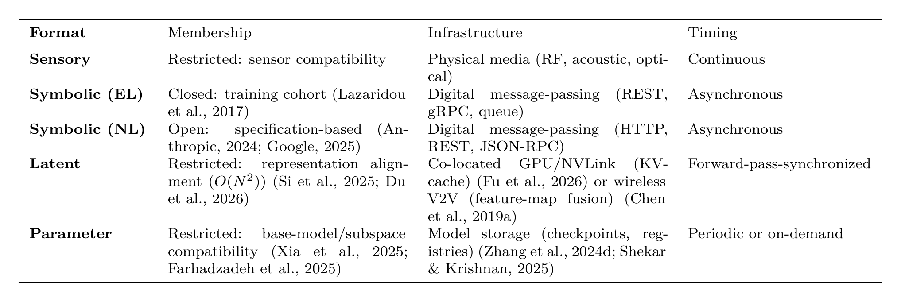
Deeper architectural coupling simultaneously restricts membership and demands heavier infrastructure. This is a structural consequence of the format’s penetration depth into the receiver’s model, not a design choice. Formats that interface only at the sensor boundary, Sensory, or the input/output boundary, Symbolic, impose minimal compatibility requirements. Formats that penetrate into hidden layers, Latent, or modify parameters directly, Parameter, bind tightly to the receiver’s architecture in all operational dimensions simultaneously. Layer 1 establishes only this binary compatibility envelope; the richer operational structure, how often, under what conditions, and with what reliability, is determined by Content in Layer 2.
E.2.2 Layer 2: Content Determines Interaction Pattern and Channel Quality
Given the feasibility envelope from Layer 1, Content specifies the optimal configuration within that envelope. The content type’s position in the referent \(\times\) function taxonomy of Figure 3 and the semantic consequence of message loss or mistiming jointly determine exchange topology, channel quality requirements, and transmission triggers. Table 7 in §6 summarizes these constraints.
The asymmetry between descriptive and prescriptive content is sharp. Descriptive Facts tolerate relaxed patterns because failure degrades information rather than action; Self-state, though descriptive, instead demands reliable delivery because a lost capability or status update leaves peers with a stale model of the sender. Prescriptive content demands tight patterns because failure produces behavioral conflicts (Cemri et al., 2025). Semantic interoperability requirements also vary by content type. Facts require shared entity schemas and spatial reference frames, Self-state requires compatible capability labels, Intent requires a common action vocabulary, and Control requires physically grounded directive semantics.
E.2.3 Layer 3: Coordination Primitives from Format \(\times\) Content Interaction
Layers 1 and 2 derive constraints from Format and Content individually. Layer 3 reveals their joint effect. Each Format \(\times\) Content combination instantiates a specific coordination primitive, a qualitatively distinct type of coordination benefit that is predicted from the information’s properties rather than by the task. Table 6 in §6 names the primary primitive for each of the sixteen cells. The narrative below groups recurring primitives across cells.
Observability expansion in Facts \(\times\) {Sensory, Symbolic, Latent}. The receiver gains world-state information beyond its sensing range, instantiated by cooperative perception (Q. Chen, Tang, et al., 2019), MARL belief sharing (Sukhbaatar et al., 2016), referential games (Lazaridou et al., 2017), and NL communication of observed objects and task progress (Zhang et al., 2024).
Behavioral legibility in Self-state \(\times\) {Sensory, Symbolic, Latent}. The receiver gains access to the sender’s internal condition for ToM-style prediction (Rabinowitz et al., 2018), instantiated by postural display, capability declarations (Linux Foundation, 2025), and latent-thought sharing (Zheng et al., 2025).
Conflict pre-emption in Intent \(\times\) {Sensory, Symbolic}. The receiver anticipates peer-planned actions before execution, surfacing as intent recognition through haptic force exchange in the Sensory cell (Rysbek et al., 2023), and as explicit negotiation in the Symbolic cell through FIPA (Foundation for Intelligent Physical Agents (FIPA), 2002) or LLM dialogue (G. Li et al., 2023). Latent \(\times\) Intent instead supports intention sharing via latent goal broadcast (W. Kim et al., 2021) rather than peer pre-emption.
Behavioral directive in Control \(\times\) {Sensory, Symbolic}. The receiver is prescribed an action, instantiated by mechanical coupling (Shaw et al., 2024), MCP tool calls (Anthropic, 2024), and executable code (X. Wang et al., 2024).
Capability transfer in Parameter \(\times\) {Facts, Self-state, Control}. The receiver’s \(\theta\) is persistently modified, and MARL parameter sharing (Gupta et al., 2017) and LLM merging (Wortsman et al., 2022) share the same amortization justification. Parameter \(\times\) Intent remains unexplored due to the temporal granularity mismatch of Section E.1.
Systems conflating multiple coordination primitives in a single channel lose the ability to apply differentiated operational policies. This justifies typed content slots, formally a compositional message \(m = \langle m^{\text{fact}}, m^{\text{self}}, m^{\text{int}}, m^{\text{ctrl}} \rangle\) where each slot carries a typed payload that can be independently routed and processed. In practice, mature systems already compose primitives ad hoc, such as symbolic facts with intent in LLM frameworks, or parameter merging atop latent feature fusion in perception pipelines, but no existing framework provides principled typed-slot composition across formats.
Takeaway. Format and Content are upstream variables. Once fixed, they strongly constrain, rather than merely suggest, the viable membership, timing, infrastructure, and coordination primitive, with the Layer-1 compatibility envelope a hard structural constraint and the Layer-3 coordination primitive a concrete prediction developed in §6. The cascade moves the taxonomy from descriptive toward prescriptive: a system architect reasoning from information requirements can derive candidate architectural constraints for membership, timing, channel, and coordination mechanism.
Appendix F: Cross-Paradigm Structural Patterns
Communication mechanisms developed across MARL, Emergent Language, and LLM-based agent literatures share a number of structural patterns. This appendix collects eight such patterns, each with its per-paradigm instances and the shared abstract algorithm it instantiates. Most are shared within a single Format or a single Content type; the last two are abstract coordination algorithms shared regardless of either. We reuse the agent-state notation of §2.1: the state is a context-parameter tuple \(\langle h,\theta\rangle\), and a message perturbs the receiver via \(\mathcal{U}_h\) on the context \(h\) or \(\mathcal{U}_\theta\) on the weights \(\theta\).
F.1 Representation Alignment in Latent Communication
Within the Latent format, two agents with private representation manifolds learn a joint coordinate system through a shared objective, so the receiver can consume the sender’s representation directly, following an encode-align-decode pattern.
In MARL, DIAL (Foerster et al., 2016) dissolves alignment by training sender and receiver jointly end-to-end. The gradient of the receiver’s task loss flows back through the differentiable channel and shapes the sender’s message embedding to be receiver-compatible by construction. TarMAC (Das et al., 2019) extends this with attention-based routing while retaining the joint-training assumption. In cooperative perception, F-Cooper (Q. Chen, Ma, et al., 2019) shares intermediate feature maps between identically architected detectors, again achieving alignment by shared architecture and joint training. In LLM agent communication, the alignment reappears in a post-hoc form. InterLat (Z. Du et al., 2026) introduces an attention-based compression module that maps a sender LLM’s hidden states into a representation the receiver LLM can consume. PHCP (Si et al., 2025) uses progressive self-training to align heterogeneous agent representations. Mixture-of-Thoughts (Fein-Ashley et al., 2025) learns a shared Latent communication space across heterogeneous LLMs.
F.2 Parameter Interference Resolution
Within the Parameter format, \(K\) independently produced weight updates are combined into a single \(\theta\) while resolving the directional conflicts among them, following a collect-resolve-apply pattern.
In MARL and federated RL, periodic-sharing protocols (Cicek et al., 2019; K. Zhang et al., 2024) loosen coupling in time to let agents specialize, while attention-based contextual aggregation (Hebert et al., 2023), momentum-based aggregation (H. Wang et al., 2024), and federated coordination (Y. Zhang et al., 2024) face the problem of merging divergent weight updates from agents that have specialized to different sub-tasks. In the LLM model-merging literature, Model Soups (Wortsman et al., 2022) establishes that simple weight averaging of fine-tuned models can outperform any individual member, Task Arithmetic (Ilharco et al., 2023) treats fine-tuning deltas as composable vectors, TIES-Merging (Yadav et al., 2023) runs a trim-elect-merge pipeline that prunes small-magnitude entries and votes on sign disagreements, DARE (L. Yu et al., 2024) applies stochastic sparsification to reduce delta density before merging, and AdaMerging (E. Yang et al., 2024) learns merge coefficients via entropy minimization. Hypernetwork architectures bridge the two communities by generating conditioned parameters rather than merging them, per-agent in HyperMARL (Tessera et al., 2025) and per-task in RPG (Yao et al., 2025), the same conflict avoided at generation time rather than merge time.
F.3 Trust Gradient over Symbolic Control Expressiveness
Within Symbolic control directives, as the expressive power of a directive increases the receiver’s verification cost must scale to bound the damage from a compromised sender, following a directive-validate-execute pattern.
In classical multi-agent systems, first-generation protocols such as FIPA-ACL (Foundation for Intelligent Physical Agents (FIPA), 2002) use fixed performatives from a closed vocabulary, where the receiver’s risk is bounded by the local handler implementation. In the LLM-agent era, second-generation protocols such as MCP (Anthropic, 2024) and A2A (Linux Foundation, 2025) extend with structured JSON schemas that increase receiver risk by exposing underspecified fields whose interpretation depends on runtime, and third-generation protocols such as CodeAct (X. Wang et al., 2024) transmit executable code, eliminating ambiguity but requiring trust or sandboxing. An analogous trust burden would arise in Emergent Language whenever a learned protocol carries directive content: without an external schema to validate the directive, the receiver must rely on shared training dynamics for safety.
F.4 Bandwidth-Fidelity Trade-off across Format Depth
For Facts content, the same coordination task admits multiple format choices that trade bit-rate for fidelity along the Sensory \(\to\) Symbolic \(\to\) Latent depth axis, following an encode-transmit-fuse pattern.
In autonomous-vehicle perception, Sensory-level cooperation transmits raw sensor data, preserving full information at high bandwidth: Cooper (Q. Chen, Tang, et al., 2019) shares raw point clouds, and the DOLPHINS benchmark (R. Mao et al., 2023) provides paired raw camera and LiDAR streams that instantiate this Sensory-level collaborative-perception regime. Symbolic-level cooperation transmits structured detections in a fixed schema, drastically reducing bandwidth but discarding sub-symbolic detail. Latent-level cooperation shares intermediate feature maps, as in F-Cooper (Q. Chen, Ma, et al., 2019) and MASH (Glaser et al., 2021), with When2com (Y.-C. Liu, Tian, Glaser, et al., 2020) and Who2com (Y.-C. Liu, Tian, Ma, et al., 2020) learning which peers to share them with, or spatial messages decoded into receiver features, as in GenComm (J. Zhou et al., 2025), capturing information density between the extremes. The same trade-off appears in LLM agent communication, where natural-language summarization, the Symbolic format, discards continuous nuances that activation-level sharing preserves, via output-embedding mixing (Pham et al., 2024), hidden-state compression (Z. Du et al., 2026), or KV-cache transfer (T. Fu et al., 2026). The two communities have developed mutually analogous compression primitives: MARL ray-based representations (S. Wang et al., 2025) and information-bottleneck compression (R. Wang et al., 2020) mirror KV-cache layer-wise selection (Shi et al., 2026) and quantization (Kriuk & Ng, 2025).
F.5 Conflict Resolution in Factual Reports
For Facts content, when multiple agents report contradictory observations of the same referent the receiver applies a belief-revision procedure to produce a coherent posterior, following a collect-compare-revise pattern.
In MARL cooperative perception, attention-based fusion modules weight overlapping observations from multiple sensors by learned attention weights to reconcile disagreements (S. Wang et al., 2025). In Emergent Language, vocabulary conflict among speakers with overlapping but inconsistent codes manifests as creolization or dialect contact, with the receiver inferring intended meaning from shared context (Harding Graesser et al., 2019). In LLM agent systems, multi-agent debate (Du et al., 2024) explicitly stages contradictory claims and uses iterative refinement to resolve them, with classical belief revision as the formal foundation.
F.6 Capability Advertisement Protocols
For Self-state content, a typed summary supports routing and coordination without exposing the underlying policy, following an advertise-discover-route pattern. In classical multi-agent systems and LLM ecosystems it is explicitly published for peers to discover and consume; in MARL the closest analogue is consumed internally rather than peer-published.
In MARL, agent-identity or type embeddings used by hypernetwork-based policies (Tessera et al., 2025) or by type-aware value decomposition (S. Fu et al., 2025) function as an internal typed capability descriptor that, by analogy, plays the role a published advertisement plays in the other paradigms: the embedding diversifies or coordinates behavior on the basis of agent type, even though here it is consumed within the agent’s own conditioning or the centralized critic rather than transmitted to and discovered by peers. In classical multi-agent systems, FIPA agent profiles (Foundation for Intelligent Physical Agents (FIPA), 2002) formalize capability advertisement through declarative schemas. In LLM agent ecosystems, A2A agent cards (Linux Foundation, 2025) and MCP tool schemas (Anthropic, 2024) serve the same routing-and-coordination function with richer schemas matched to LLM-friendly structured-output decoders.
F.7 Scheduling under Bandwidth Pressure
An abstract scheduling algorithm, independent of Format and Content: transmit a message only when its expected informational gain to the receiver exceeds a threshold determined by channel capacity, following an estimate-threshold-transmit pattern.
In MARL, attention-gated communication (Jiang & Lu, 2018), learned scheduling (D. Kim et al., 2019), and implicit-consensus gating (D. Li et al., 2025) have agents learn when to send rather than always send, the last disabling transmission once implicit consensus suffices and sending only when a local observation is non-redundant with the shared consensus, with the gating function approximating the information gain criterion. In Emergent Language, inductive biases for positive signalling (Eccles et al., 2019) and least-effort auxiliary objectives (Luna et al., 2020) push the emergent protocol toward informative-only messages. The same primitive appears in LLM agent systems, where agents can suppress redundant messages once a peer is inferred to already share the relevant context.
F.8 Asymmetric Sender-Receiver Role Structure
An abstract role structure, independent of Format and Content: one agent holds privileged information that the other must act on, and the channel between them is designed around this information asymmetry rather than around symmetric peer exchange, following an observe-encode-transmit-decode-act pattern.
In MARL, speaker-listener games (Lowe et al., 2017; Mordatch & Abbeel, 2018) fix one agent as the speaker, which observes the target, and another as the listener, which acts on the message. In Emergent Language, the canonical referential-game setup (Havrylov & Titov, 2017; Lazaridou et al., 2017) is structurally identical, with the sender seeing a target referent and the receiver choosing among distractors. In LLM agent systems, CAMEL’s inception prompting (G. Li et al., 2023) fixes one agent as “assistant” and another as “user,” creating the same information asymmetry through role assignment.